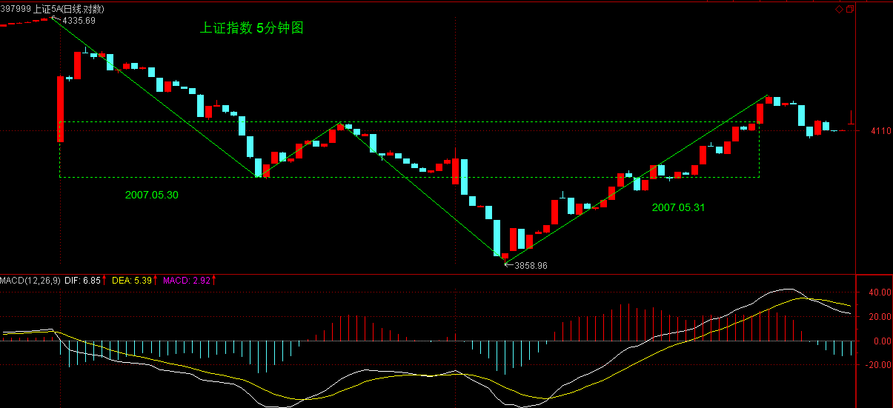
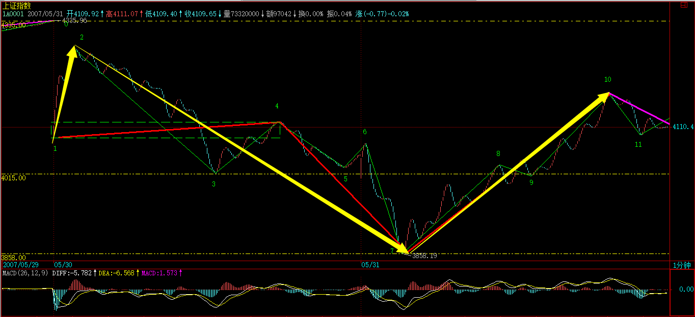
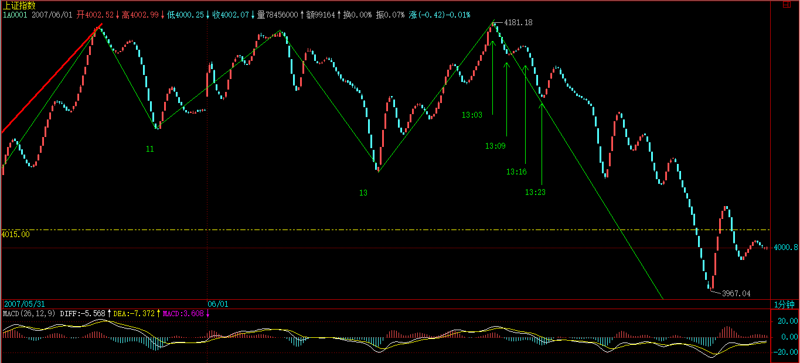
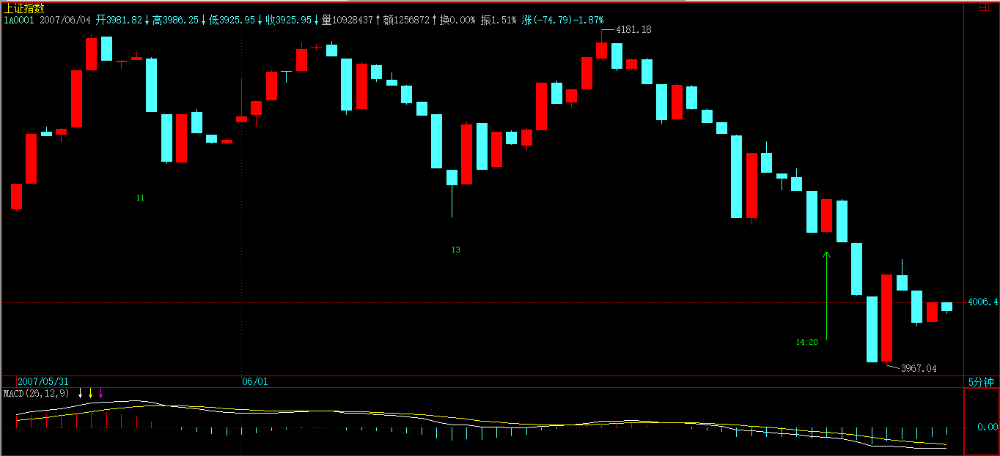
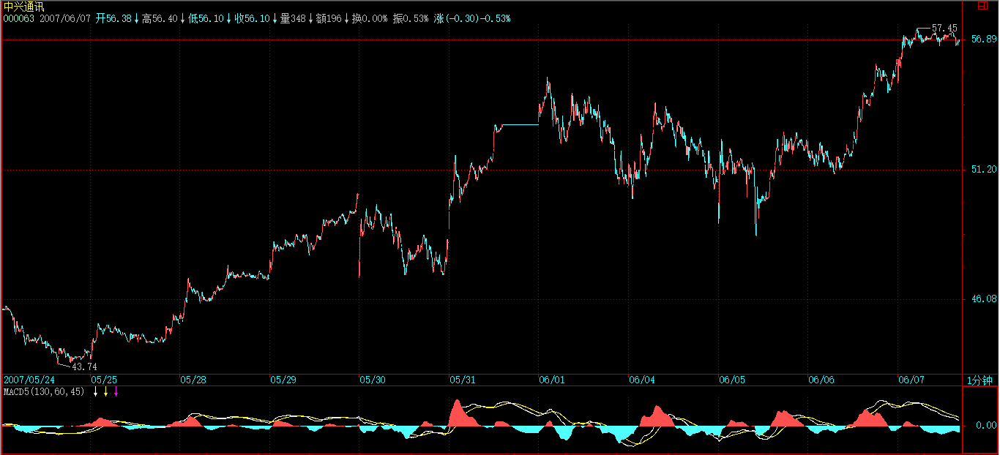
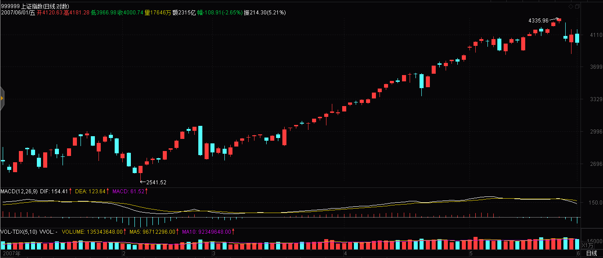
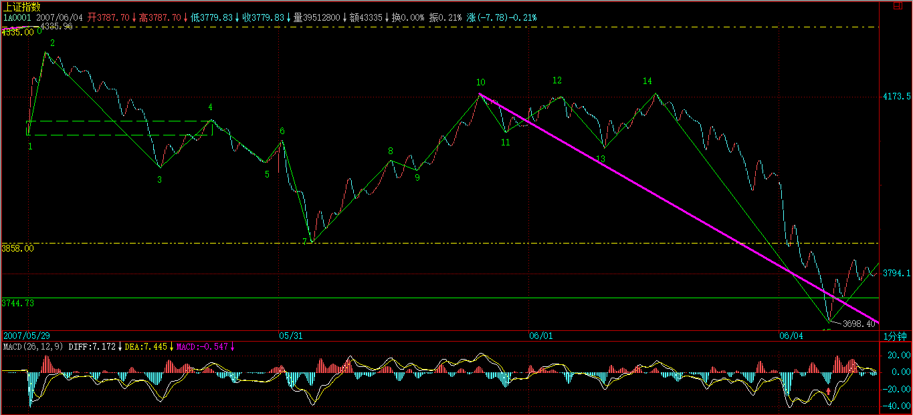

(2007-05-31 22:35:44)
部分由于管理层的夜半歌声，本周已经说了4天股票，本ID就来一个大满贯，再说一天，不过下不为例，天天说股票，一周说5天，各位不审美疲劳，本ID也烦了。【韶山映山红】2007-05-31星期四。2007-05-28星期一早上发的教你炒股票55，到这时候实际上是第四天说股票。】
看到很多人还是发蒙，因此，就用这两天的1分钟图，继续说说怎样进行图解。当然，这些图解都是可以当下进行的。【韶山映山红】后期的线段要求后线段破坏前线段才算，所以就有天然的滞后性，早期的线段是次级别走势类型，当下到什么程度？★可以做个专题，以后研究。】
今天看回帖，好象有人希望本ID在什么QQ上即时发布什么提示之类的，这绝对不可以，QQ对于本ID来说只是用来419的，用来说股票也太浪费了，而且，本ID那4小时是天王老子都不能打扰的，说句不太客气的话，本ID的资金，大概比来这里所有人的资金之和都多，本ID忙着上QQ，出问题了谁负责？【韶山映山红】“本ID的资金，大概比来这里所有人的资金之和都多，”大资金进进出出的行动缓慢，按照大级别操作，也不是坐等小级别去完成大级别走势，相反，“本ID那4小时是天王老子都不能打扰的”，缠师也是时时刻刻盯盘。可见大级别的结构判断是多么的叫人不放心。】
所以，最多就这样形式了，很多事情，还是要靠自己多练习，本ID最多就是一个陪练的。【韶山映山红】缠师总说自己是陪练的，从来不以老师自居。学习是自己的事。没有救世主。】
必须要再次强调，不熟练的投资者，一定不能全仓进行操作，【韶山映山红】即使全仓，也不是100%的满仓。】基本的仓位应该拿着中长线的股票，部分仓位可以用来练习，【韶山映山红】用中长线股票的部分仓位做练习。中长线，是指月线笔级别的走势。】否则全仓操作，一旦来几次半生不熟的折腾，到时候连本都没了。【韶山映山红】成本管理是第一要务。保本是底线。部分仓位做练习盘，有损失，也只是总仓位的一小部分。按照资金管理的常例，每次操作的损失控制在总资本的1%为好。】
而且一定要注意，卖点是在涨的时候出现的，不是追杀出来的，如果你砍了地板价，那一定不是在卖点上。【韶山映山红】不是跌了之后等反弹再找卖点，而是下跌之前的上涨找卖点。】
只要是赚钱的，就没有卖错，宁愿卖早，不要卖晚。【韶山映山红】原则是买点买、卖点卖，那就不能用赚钱还是亏钱来衡量对错。只要赚钱就没有卖错的前提是买对了。】如果小级别延伸破坏大级别背驰，就会必然的买早卖早，这是系统风险，要靠小级别走势分析来护航，看不见更小级别走势就容易感觉背了又背。】
如果卖错了，就不看这股票，除非有新的买点。【韶山映山红】改变节奏的方法是停下来等新的机会。】如果买对了，也就不存在亏钱的卖错了，所以这里说的卖错了，是指判断卖点有误。】
【韶山映山红】若禅精舍（陈秋明）：
看文章，一定要结合当时的条件与环境，这和学任何东西都是一样的。基本仓位应该拿着中长线的股票，这是因为当时的环境是2017年牛市的中间阶段，市场环境大好，如果抱着这样的基本仓位不知道结合环境，在熊市和震荡市里面这样操作，大概结果都知道是什么样。
只要是赚钱的，就没有卖错。实际操作中，卖掉之后又继续涨，很多人会重新买进去，这样如果是在盘中卖的，尾盘看好走势可以再介入也可以，否则就容易失去主动权。在操作中，主动权是最重要的，像很多人做短线早盘买进去，当天无法出局，任凭走势如何变化也无能为力，这就是丧失了主动性的后果。卖早了没关系，只要赚钱出来，卖早了还可以去发现其他买点上的股票，时间上并不损失而且资金终归是安全的，如果是卖迟了，一来利润损失，二来失去了早卖可以有的机会成本。所以一般都提倡宁愿卖早不要卖迟，此外就是卖掉的股票无论后面是否继续涨，操作者要关心的只有一点：有没有买点出现？没有就找其他相应的买点。
多数人都有根据盈亏进出的习惯，所以多数人都是亏钱的。但真的在临盘操作时不考虑收益问题，估计很多人都很难做到。其实无论进出，都不用考虑收益问题，这有个很重要的思维方式转变：你只管做正确的事，不用去考虑盈亏，市场自然会给你奖励，奖励你一直做正确的事。而这种思维方式，其实和股票之外的其他事情，都是相通的。
】
还有，有人误解，认为本ID的方法就是拼命弄短线，这些人大概是跟孔男人学的中文，所以就这水平了。【韶山映山红】次级别打短差是为了降成本，属于正确的做事。做正确的事还要大级别的操作。】
用本ID的方法，如果你选择年线级别操作，那比巴菲特还巴菲特，大概一个年线的买点后，至少到等几十年才有卖点，你就拿几十年吧，就怕你拿不住。
还有，如果你是按周线级别操作，那这两年，至少指数上你根本没有卖点。
至于按30分钟操作的，在一个30分钟第三买点后的中枢上移中，如果这上移是从10元开始，只要不形成新的30分钟中枢，那么就算到了100000元，你还是要拿着，为什么？没有卖点。【韶山映山红】中枢上移就是还在上涨趋势中，直到次级别的线段类盘整背驰才能判断可能形成新的中枢。形成中枢之后，还要先出三卖才是筑顶成功，所以在中枢出现之前，可以静静的等。】
所以那些说学了本ID理论就拿不住股票的，自己好好反思一下，究竟你学了什么？【韶山映山红】盘背就走的也拿不住。】完全拿不住的是级别混乱的。】
闲话少说，看图解图。【韶山映山红】线段的初级阶段正式登场。】
【韶山映山红】20070531.jpg（2007-06-01 01:01）】
对着图，首先要确定最小分析级别，【韶山映山红】是分析级别，不是K线图的级别。这个分析级别是指线段中枢的级别。】
也就是说，这级别以下的都可以看成是线段，【韶山映山红】“确定最小分析级别”意味着这个级别不是可以看见的最小级别，而是打算分析、操作的最小级别。要能看见低于这个级别的走势，或者说必须能看见，否则就不能划分这个线段。实际上不但能看见，还能够分辨是次级别走势还是更低级别走势。也就是说，这时候的线段级别和后期线段级别相当。】
【韶山映山红】线段的提出，就可以解决更低级别走势的破格提拔问题。这级别以下的都看成是线段，那些比线段低级别的就都破格提拔成线段级别了。那么，什么样的低级别走势可以看成是线段呢？★可以做个专题，以后研究。】
而站在最小分析级别的角度，每一线段就是其次级别走势类型，【韶山映山红】这时候线段的定义就是最小分析级别的“次级别走势类型”。按照定义，更低级别的走势不是线段，但是“看成是线段”。反过来，每一线段不管真实级别是什么，都视为次级别走势类型。也就是说，虽然还没有提出初始化函数的概念，最小分析级别的走势已经不完全符合递归函数的要求了。】
三个线段重合部分就构成最小分析级别的中枢。【韶山映山红】先确定一个概念上的最小分析级别，定义最小分析级别的中枢是线段中枢。然后再去定义线段，线段是次级别走势类型，最小分析级别以下的走势，不管是不是次级别走势类型，都看成是线段。不管线段怎么定义，这时候开始确立：线段中枢才是本级别的中枢。】
【韶山映山红】这一课提出最小分析级别的概念，实际上是在做初始化的工作。虽然线段的定义是次级别走势类型，但是更低级别的走势也看作是线段，也就不能说线段符合递归的要求了。】
【韶山映山红】当我们递归的时候，分析本级别中枢，“每一线段就是其次级别走势类型，三个线段重合部分就构成最小分析级别的中枢。”再分析次级别走势，“这级别以下的都可以看成是线段”。那么：
１，“这级别以下的都可以看成是线段”，也就是说，更低级别的走势，和次级别走势，享受了同等待遇。
２，构成中枢的三个次级别走势都是线段，线段可能是次级别以下的走势，也就是说，构成中枢的三个次级别走势，实际上也可以混入更低级别的走势。
３，还是那个问题，什么样的更低级别可以看成是线段？什么样的更低级别要组合以后才可以看成是线段？笔虽然可以解决初始化的问题，但没有笔的时代，对更低级别的处理方法，是走势类型分析的参考依据。】
【韶山映山红】如果都比照跳空缺口的单独成笔、单独成段的处理方法呢？★可以做个专题，以后研究。】
当然这些线段本身，可能都属于不同级别，这问题在前面已经说过了。【韶山映山红】站在本级别看次级别，次级别可以是不同级别走势的混合。递归到高一个级别之后，回看本级别，是否依然是不同级别走势的混合？这是缠师没有明确正面解说的潜规则？★可以做个专题，以后研究。】
例如本图，最小分析级别先规定为1分钟级别的，所以所有1分钟级别以下的，都是线段，【韶山映山红】所有1分钟级别以下的，都是线段。那么，1分钟级别的是什么？线段中枢构成的1分钟走势类型。也就是说，这个预设的最小分析级别，不是直接看出来的，而是一个虚拟的假设，我们直接动手划分的其实是次级别，然后根据划分的结果，去构造出我们要分析的级别。】
【韶山映山红】那么，这里的线段，算是同级别分解的结果吗？★可以做个专题，以后研究。】
在图上标记着数字，所有的[N，N+1]，都是线段。
有人可能要问，01段是跳空缺口，23段上上下下，很复杂，怎么都是线段？因为这都不是1分钟的走势类型，里面没有1分钟的中枢，所以都是1分钟以下级别的，【韶山映山红】“因为这都不是1分钟的走势类型，里面没有1分钟的中枢，所以都是1分钟以下级别的，”这句话如果拿来说23段为什么是线段，就循环论证了，所以这句话说的是01段跳空缺口为什么是线段。有1分钟中枢的才是1分钟的走势类型，没有1分钟中枢的，无论简单还是复杂，都没有意义。所以，连简单都不是，直接什么都没有的01段，也可以是线段。】
虽然缺口是最低级别的，当然比23段这种要低级别，但在1分钟级别显微镜下，没有区别，都可以看成是没有内部结构的线段。【韶山映山红】“虽然缺口是最低级别的，，，，但在1分钟级别显微镜下，没有区别，都可以看成是没有内部结构的线段。”并不是每一个缺口都能够享受这种待遇。跳空缺口的单独成笔、单独成段也是有规矩的。★跳空缺口的处理，可以做个专题，以后研究。】
【韶山映山红】缺口可以是线段，笔级别的线段类走势也可以是线段，介于两者之间的单独一笔却不可以成线段，这背后的逻辑是什么？★可以做个专题，以后研究。】力度，或者能量。】
当然，如果你要考察23段的内部结构，也是可以的，但那就不是站在1分钟级别的基础上了。【韶山映山红】那又是什么级别？23段没有图上中枢，也就是说，笔级别的线段类走势，比1分钟级别的次级别还要低一个级别。】
【韶山映山红】若禅精舍（陈秋明）：
理论是要用的，车子是用来跑的。在最低级别走势类型被定义后，例如定义30分钟级别走势类型为最低级别走势类型，那么30分钟以下的所有级别的走势，都在30分钟视角下被统一，这里没有绝对相同的级别，只是这种误差范围在当前视角下可以被接受。很多人想不明白这一点，或者习惯了以一分钟级别作为最低级别走势类型，切换到其他级别就无法搞。
包括后文中的线段也是一样，根据线段的定义，在走势图上划分出来的线段，其实际级别并不一定相等，最简单的线段就是三笔，满足基础要求的三笔就完成了，而复杂的线段甚至可以作为5分钟级别走势类型看待，但用了这套级别系统，就按这种级别系统来。
整部缠论里面其实很多这种相似的问题，像无论什么走势类型、三个买卖点、结合律、多义性、同级别分解，本质上全部是为分析走势能量而产生的各种方法，问题的根本在于对走势能量的解读。如果一眼看过去就知道大小级别不同走势在当下的能量博弈，那还要这些方法干什么？方法为目的服务，难道过河了之后还要把船背在身上？
就像上面提到的，简单的线段可以三笔就完成，复杂的线段甚至可以作为5分钟走势类型看待，那么在你确实深刻理解线段这个工具之后，当然可以在盘中对这种工具进行改造，以使分解能够更加清晰的看清楚走势。但这些都是一根筋的噩梦 】
由此可见，上图可以看成是10段线段构成的，线段中的波动，至少在分析1分钟级别的角度，就是可以忽略不计的。【韶山映山红】分析1分钟级别的角度，忽略线段中的波动。不管这些波动是中枢还是波折。】本级别关注次级别，忽略次次级别。】
【韶山映山红】20070531.jpg（2007-06-01 01:01）】

这里有一个地方是可能有疑问的，在23、78段5个带绿箭头指着的地方，似乎可以看成是一线段，【韶山映山红】56课还说2-3段带绿箭头指着的地方是否可以成为1分钟级别的中枢，这里就改口说是否可以看成是一线段。如果震荡幅度更大一些，这里看成是一线段，又怎么处理？★实际上，是看3段结构是否可以成为中枢，至于这个中枢是独立成段，还是成为线段级别走势类型的中枢，还要看前后的走势构成。具体到这个图形，这5个地方如果能够“看成是一线段”，也都无法单独成段，只是构成线段级趋势，级别高了，也还是线段。】
但为什么没有？因为在这似乎是三段的结构中，第三段的都太微弱，把图形缩小后几乎就看不到了，【韶山映山红】把图形缩小，就是压缩时间轴，所以这里讲微弱和几乎看不到，是价格轴的幅度，而不是时间轴，也不是关注形态学上是否能够成笔，而是关注是否有一定的价格轴方向上的重叠，实际上是形态学结合了动力学的因素。】
对比一下89段带绿箭头的地方，这第三段就明显不同了，所以这是一个1分钟以下级别的上下上结构，【韶山映山红】这里的“上下上结构”应该是“下上下”的笔误。这5个绿箭头的三段的方向应该不同，2-3段是下跌线段，所以三个绿箭头的是“上下上”，第三段是“上”，幅度太小而不成段。7-8段是上涨线段，两个绿箭头是“下上下”，第三段是“下”，幅度太小而不成段。8-9段是向上线段之后的独立向下盘整中枢，也是“下上下”，第三段是“下”，幅度足够所以成段。】
而前面的不是。【韶山映山红】前面的五个地方都不是1分钟以下级别的上下上结构。8-9成为段完全是因为重叠，从62课以后的笔构成线段的角度看，这里不成线段。】
当然，如果你一定要说78段那箭头的地方很明显，【韶山映山红】这里应该说的是7-8段的第二个绿箭头的位置。因为没有严格的笔定义，这里就可以有分歧了。所以后来又进化出了笔。笔的定义解决了线段划分不唯一的问题。】
那么78、89就合成一线段的上涨趋势了，【韶山映山红】“一线段的上涨趋势”是什么级别的？依然只是线段。那么这个时候的线段就有四种形态了：1-2的线段类盘整，2-3和3-4和9-10的线段类趋势，5-6和8-9的中枢盘整，7-8-9合成的中枢趋势。】56课把这种中枢看做1分钟中枢，57课这里开始修正为线段中枢，开始了线段类走势和中枢类走势的级别平等的划分。】
这也可以，只是如果你是按这个标准的，那么所有和78段箭头位置微弱程度一样的，都要这样处理。【韶山映山红】没有准确定量化分析的时候，就会有标准要统一。】
【韶山映山红】“78段那箭头的地方”不算中枢，就是次级别以下级别的走势，视为线段，“78段那箭头的地方”算中枢，就是次级别中枢，加上89的次级别中枢，就构成次级别上涨趋势，这个趋势只是合成一个线段，而不是分解成若干个线段。 这里只说“78、89就合成一线段的上涨趋势”，并没有把次级别的9-10拉进来一起说。之前不算中枢的划分是次次级别的线段类上涨趋势+次级别的盘整走势+次次级别的线段类上涨趋势，所以是三段。之后算中枢的划分是次级别的中枢类上涨趋势+次次级别的线段类上涨趋势，都是上涨，上涨+上涨，还是上涨，还是只能划分为一个线段。】
【韶山映山红】上面是复盘的划分，“78段那箭头的地方”算不算中枢，两种情况都可以很轻松的划分。如果是那个当下呢？
7开始的时候，先有一个三段向上。
线段成立。
然后到第二个波折处，假设不算中枢，就构成线段类上涨趋势，线段延续，还是一个线段。
假设算中枢，这时候就是一个盘整走势的一段，也就是说，像4-5-6那样成两段了。
然后继续向上到8-9的那个绿箭头的位置，是第三段，这时候的结构和4-5-6-7是一样的。
之后的下跌没有形成转折，而是形成8-9回踩中枢，这个时候是“78、89就合成一线段的上涨趋势”的当下，之前的三段划分废止，改成一段划分。
很好的一个当下划分的实例。这里的问题在于8之前的连接段只有一段，不能单独成段。如果8之前的连接段是三段呢？这里是否划分为线段级别的线段类趋势？看后面的实盘划分。不是的。只要第一段包含中枢，后面的中枢就划分为同一个趋势的中枢，而不是线段类盘整走势。看33-34这一段的划分】
【韶山映山红】7-8是次次级别的线段类趋势，8-9是次级别中枢盘整，9-10是次次级别的线段类趋势，合在一起，没有划分成一个a+A+b的次级别走势，而是划分成了次级别的三段走势。同样，4-7也没有划分成a+A+b的次级别走势，而是划分成了次级别三段走势。★作为次级别走势类型的线段划分，与走势类型本身的划分，有哪些异同，可以做个专题，以后研究。】
【韶山映山红】1-2是三段结构的线段类盘整，但是不像5-6、8-9一样成为次级别中枢，而是成为次次级别走势。也就是说，这里并不完全是次级别的同级别组合。】
【韶山映山红】线段的标准首先是走势的转折，其次是走势的重叠。】
【韶山映山红】这时候还没有明确笔的概念，是否构成段，强调的是笔形状的走势重叠成段。按照后期的笔成线段的规则，7-8之间不会出现段，但是8-9也是不能成段的，7-8-9-10只成为一段。】走势类型注重重叠，笔线段更注重高低点，尤其是新高新低。】
本ID还是按图上的标记线段。【韶山映山红】缠师还是倾向于把剧烈的震荡看做盘整，力度因素。】
【韶山映山红】缠论的进化不像生命那样从单细胞生命向高等生命进化，反而像我们认识自然界那样，从生命体向分子原子的微观世界前进。缠论到57课的时候，还没有进化出分型和笔，但进化出了原始的线段，线段构成可以是低级的走势形态，也可以是低级走势的重叠。】
【韶山映山红】若禅精舍（陈秋明）：
标准，是主观设定的，对绿箭头的地方，也可以设定为可以是一个线段，对最终的分析并没有什么影响，只是从使用的角度并没有必要。就好像我们量一个人的身高，并不需要精确到微米级别一样，对走势来说，特别是对向上的递归而言，更没有必要太过于精确。例如操作级别是五分钟，前面说的线段之间的实际级别差异，在向上递归之后，就可以忽略不计了。
但设定了一个标准，就要按这个标准来一以贯之，这至少对某一段待分析的走势段来说是必须的。当真正熟练了之后，当下这段走势用标准A来分析更加清晰，但对于另外一个走势段来说，可能标准A并不适用，而是用标准B来分析更加清晰，这在实际分析中是很常见的情况。当然如果对理论的理解还不足以让你如此灵活的去运用，那么就用同一套标准最好。
标准的主观性还在于，我们考试的时候，设定60分为及格线，那么59.5就是不及格，60分整就是级别，而实际上这两个数字并没有什么差别，但这就是标准。而在股市中，很多时候连这种精度的标准都不需要，例如上面说的箭头处的微弱程度，这个微弱程度没有任何必要去设定一个精确的标准去判定什么是微弱，什么是不微弱，当然强迫症患者硬要去设定也可以，只是这种冗余的设定对实际应用效果的提升幅度，与多出来的精力、步骤，完全不成正比。】
线段有了以后，一切都好分析了。【韶山映山红】有了线段，就有了初始化。最小分析级别的中枢就有了依据。】
【韶山映山红】20070531.jpg（2007-06-01 01:01）】

当然，在当下时，例如在今早9点30分钟，是没有后面的线段的，但线段的标准，是一样的。【韶山映山红】“今早9点30分钟”的时候，已经形成1分钟中枢1-4，4-5离开段已经成立，“没有后面的线段”，所以是否出现三卖、是否继续中枢的延伸震荡，当下是无法判断的。当时的K线图，9:25开盘竞价有一个单独的K线，所以“今早9点30分钟”的时候，已经知道向下跳空缺口的存在，只是不知道会有一个强力反弹形成5-6段。但不管怎么样，总会有一个向上线段形成三卖的，按线段的标准去划分就好了。】
你可以很精细地分析56段，是一个上下上的内部结构，其中下一段是跳空缺口，【韶山映山红】这个内部结构的上下上不是同一个级别。两个上属于笔的级别，跳空下是最低级别，虽然跳空缺口可以单独成笔，可以让级别等同，但还是属于破格提拔。从另一个角度看，构成中枢的三个次级别走势的重叠，也可以不是同一个级别？或者说，力度足够的次次级别可以视为次级别？★可以做个专题，以后研究。】
但无论如何，这就是一个线段。【韶山映山红】530的跳空缺口单独成段了，而这里的跳空单独成笔，所以强调5-6是三笔重叠成段。这个线段是1分钟的次级别中枢，单中枢成段。8-9段也是。】
不过，由于前面12、23、34构成的中枢只有1分钟级别的，那么其构成第三类卖点的次级别就是1分钟以下级别的线段，【韶山映山红】这里4-5段的离开只是三段盘整的结构，还不算严格的次级别离开。】
这时候，就要考察一个有上下上结构的1分钟的次级别结构了，【韶山映山红】返回段就至少要有“上下上结构”的三段盘整。】
而56段显然符合这个结构，有明显的上下上，而45段也是符合1分钟次级别的要求的，【韶山映山红】两个三段盘整结构。典型的盘整+盘整构成第三类买卖点。】这种结构有一个前提，就是返回的三段盘整不演化成五段盘整，也不演化成线段类趋势。也就是说，要确认返回段走完了。★】
【韶山映山红】如果这里4-5段只是直线的一笔呢？就没有下文所说的“次级别离开中枢”，5-6就不构成三卖了？理论上好像是这样，但实际上，原文还有4-5是跳空缺口、而5-6构成三卖的实例，★可以做个专题，以后研究。】4-5对3-4的力度足够大，就构成了非背驰离开，这种离开都可以视为离开中枢，而不是中枢震荡的延伸。即使之后的走势再回到中枢，那也是小转大的结果。】
注意，当考察1分钟的次级别时，就不能笼统地把所有1分钟以下的都看成1分钟的次级别了，【韶山映山红】考察1分钟中枢的时候，就是“笼统地把所有1分钟以下的都看成1分钟的次级别”，换句话说，构成中枢的次级别走势包括次级别以及更低级别的走势。 4-7可以看作是一个a+A+b的走势结构，就是所谓笼统的都看成1分钟的次级别。这样就无法看到这里出现的三卖了。在这里a+A+b的走势结构被划分成为次级别离开中枢+反抽中枢+再次离开中枢的三个部分，才能体现出第三类卖点来。由此可见，所谓第三类买卖点，并不是已经完成的、完整的走势类型的组合所构成的，而是人为的做同级别分解的划分形成的。由此，不但次级别趋势离开的第二个中枢可能构成第三类买卖点，甚至第一个中枢就可以构成第三类买卖点。★可以做个专题，以后研究。】
因为这里的视点已经不同。【韶山映山红】前面的视点是考察是否构成1分钟中枢，关注是否有线段，以及线段是否重叠。一旦形成1分钟中枢，视点就马上转移到是否形成第三类买卖点，就要考察线段本身，要看内部结构是否符合要求，就要看次次级别的形态。】
显然，这个的45、56，就构成了标准的次级别离开中枢与反抽中枢，【韶山映山红】这个1分钟中枢是1-2-3-4，次级别离开中枢是4-5，次级别反抽中枢是5-6。注意：这里说的是“次级别离开中枢与反抽中枢”，不但是盘整+盘整，而且不是5段或者7段盘整走势类型，仅仅是3段中枢的盘整。而且，4-5属于线段类盘整，5-6属于中枢盘整，两者的级别并不一样，只是这种分解的时候视为同级别。】
而这1分钟中枢的区间是[4087，4122]，而56段只到了4077，所以这就是第三类卖点了。【韶山映山红】1分钟中枢[12，23，34]，区间[4087，4122]是点1和点4的位置。4077是点6的位置。】
【韶山映山红】20070531.jpg（2007-06-01 01:01）】

当然，在具体操作中，还可以特别精细地去分析这个问题，【韶山映山红】特别精细地去分析，就可以把操作级别放到更低，更当下。】56段里的上下上，后上对前上的力度，从下面对应的MACD的柱子面积比就可以判断出不足来，因此这里就有很小级别的背驰，这都可以用当下分析的，【韶山映山红】中枢盘整走势的内部盘整背驰，构成三卖的次次级别区间套。】
【韶山映山红】现在恢复的历史K线图看不到缠师当年K线图的那个缺口，MACD对比不明显。缠师说过，那时候开盘集合竞价有一个单独的K线，从缠师配图上也能看到一个很低的小点，现在都把集合竞价放到第一分钟里面了。这一个最低价位的K线对MACD的影响比较大。】
【韶山映山红】这里如果看Ｋ线的斜率和长度就不构成背驰。换句话说，背驰辅助判断，MACD比Ｋ线的斜率和长度更可靠？后一个上，持续的时间少一些，只有5个K线，对MACD的影响比较小。短时、剧烈震荡都有这个问题。★可以做个专题，以后研究。】 跳空缺口使得后面的上有一半处于前面的上的低位，反而拉低了柱子高度，新高后的上涨并不多，这样对比斜率和长度就可以有背驰了。】 要是把后面的上单独拿出来，力度比前面的上大多了。只是这一天的低开是530之后的又一次破位低开，跟在跳空低开之后的急剧上涨，就被当做是回光返照了。那么，跳空缺口之后的反弹，应该如何当下？★可以做个专题，以后研究。】
当然，这样的精确度，需要操作者十分熟练并且反应与通道都十分快，并不要求每个人都有这个可能，这里只是进行分析，对大的级别，道理是一样的。【韶山映山红】区间套基本上也就截止在这个笔级别了。更低级别的背驰更多的是感觉。】
同样道理，67段里的内部结构下上下，后下力度也比前下弱，这从下面红箭头所指两绿柱子面积的对比就可以知道，所以这内部就有了背驰。【韶山映山红】柱子面积和柱子高度都要小一些。黄白线的表现与此相反。也就是说，跌势越来越大了，加速度减弱了。所以这个7的低点并没有办法把握，之后的二买更靠谱。】

注意，这67中的上，幅度上也很微弱，但时间比较长，是一个小的时间换空间的反弹，所以是可以看成一个上的，【韶山映山红】】更重要的是，这上使得绿柱子回缩到0轴，这就更证明了这是一个不能忽视的有技术分析意义的反弹。【韶山映山红】这里讲的幅度很微弱也是价格轴，时间比较长的水平走势在MACD势必会出现回抽0轴。所谓以时间换空间的形态是动力学的影响。】以时间换空间的反弹，从形态学的角度看，并不算实际意义上的反弹，只是“有技术分析意义的反弹”，幅度很微弱，但时间比较长，怎么判断是否“可以看成一个上”？这里使用的判断依据就是“使得绿柱子回缩到0轴”。前面的加速下跌只有4个K线，加速下跌在第5个K线开始减缓，持续减缓了7个K线，使得绿柱子开始缩短，然后是七八个K线的平移，使得绿柱子可以缩短至0轴。】
【韶山映山红】三段走势的中间这段，作为中继，可以是“有技术分析意义的反弹”。稍后的绿箭头那五段，三段走势两边的段，就不能这样。】
【韶山映山红】这一段原文还传达了一个信息：这时候的线段都要有三段结构，哪怕是横盘也行。后期线段沿袭了这个要求。毕竟，笔和线段还是要有区分的。】
【韶山映山红】20070531.jpg（2007-06-01 01:01）】
【韶山映山红】若禅精舍（陈秋明）：
不能忽视的，有技术分析意义的反弹，就是对走势段方向的反抗力度满足了某个标准，该标准同样是模糊的。如果说回抽到零轴就算，那差0.01还算不算？这些标准都存在主观因素，并没有也不需要必须去精确定义。如果是去编程，那么考虑数值波动范围的情况，可以设定一个±5%之类的区间，但5.01%算不算？所以这种问题永远不可能真正的使其精确化，只是考虑对条件进行优化时的一个选择。】
当行情走到6点时，34、45、56这三段，就可以看成是一个1分钟中枢了，【韶山映山红】6是中枢1-4的三卖，之后必然有一段下跌，跌到哪里，完全无法判断。所以在6这个当下就做多义性划分，就可以按照中枢离开段是否返回中枢去做确定性分析。】
当然，这种分法和原来[4087，4122]中枢的分解不同，【韶山映山红】原来[4087，4122]中枢的分解是1-4中枢。】
但站在多义性的角度，这是绝对符合结合律的，当然是一个分解的方法。【韶山映山红】多义性分解的角度，就是结合律在缠论分析里的运用。不是走势类型分析的中枢，而是多义性分解的中枢。也就是说，走势类型分析的中枢还是12、23、34三段构成。】
【韶山映山红】那么，怎么区分是多义性分析的中枢，还是走势类型分析的中枢呢？★可以做个专题，以后研究。】具体到这里，530跳空破坏前走势，发生转折，转折后的第一个中枢就是走势类型中枢本尊。非背驰走势之后形成的第一个中枢也可以这样看待。为了保持连接段的完美，还可以调整。】
【韶山映山红】中枢的第三类买卖点和中枢可以结合组成两种多义性分析的形态：多义性中枢划分，线段类趋势的划分。都可以对后面的走势做判断分析。】
这分法，就使得23、67成为这中枢的一个震荡，从而可以用力度的方法来发现背驰。【韶山映山红】这样多义性分解的好处是，a+A盘整背驰必回中枢，就有了一个相对确定的判断，而a+A+b盘整背驰对回跌位置没有那么强的判断能力。】
对于23、67下所有绿柱子面积之和，显然后者小，所以就知道，67只是针对[34、45、56]中枢的一个震荡，必然至少回抽中枢附近，而对67内部用区间套的方法进行精确定位，具体的看上一自然段的分析。按这种方法，7那买点的把握，就是很简单的事情了。【韶山映山红】6-7对4-5没有线段类盘整背驰，所以不保证回到5的位置。但6-7对2-3是中枢震荡盘整背驰，要返回中枢ZD点5的位置。两种判断不一致了，但并不妨碍7成为买点，只不过要关注之后的返回是直接回到中枢，还是形成第三类卖点。这时候判断形成三卖的可能性还大一些。★】6-7的力度实际上大于4-5，只是6-7的持续时间太短，影响了总的力度。】
注意，这都是可以当下分析的，根据当下的走势，自然就能把握。【韶山映山红】当下分析，左侧判断。】
如果那7当成是第一类买点，【韶山映山红】这里7是盘整走势类型的一买，不是趋势背驰的一买。】那么9就是第二类买点了，这符合次级别上，次级别下，不创新低或盘整背驰的定义，【韶山映山红】7-8次级别上，8-9次级别下，8-9不创新低或8-9创新低而盘整背驰，所以9是线段级的第二类买点。7-8里面没有中枢，就是线段类趋势，8-9就是中枢盘整，9-10里面也没有中枢，也是线段类趋势。也就是说，7-10实际上是一个a+A+b结构的向上盘整走势类型，在这里被划分为上下上的三段走势，所以这种情况下A中枢构成第二类买卖点。】这里8反弹回中枢3-6了，当下可以判断转折，所以9的二买可以操作。】
对比一下2点和9点，一卖一买，都是第二类的。【韶山映山红】对比什么？这句话有别的什么意思吗？★以后研究。】2是没有一卖的二卖，二卖比高点低得不是很多，反弹回补了缺口的很大一部分。9是没有一买的二买，7其实不是真正可以把握的买点，小转大的判断总是难免要滞后，所以9的二买离开7的背驰点已经比较远了。一卖一买，都是第二类的，都符合规范，也都是需要忍受的操作滞后。忍受的是级别，价差是什么样，就不好说了。】
当然，在78里，其中的下也是一个第二类买点，但该买点的级别比9这点要低。【韶山映山红】“其中的下”是哪一个？在缠师配图的7-8之间有两个绿箭头都是类似中枢的结构，所以7-8段算是一个典型的a+A+b+B+c结构。a段后的下跌低点就是7-8线段“其中的下”的次级别二买，9是线段级的第二类买点，所以该买点的级别比9这点要低。9这点的二买是1分钟级别的。7-8里的二买是次级别的。】
【韶山映山红】这里7-8的内部形成了a+A+b+B+c结构，也可以看作是线段类上涨趋势，c、b背驰，然后8-9盘整，9-10线段类上涨。】
【韶山映山红】7-8段的第二个绿箭头的中枢如果成立，就和8-9中枢构成趋势。还是线段级别，但是走势类型变了，划分也跟着变了。这种情况下的当下划分会有什么不同？首先，7开始的一段还存在，然后第二个绿箭头的中枢成为向下线段，同时成了代替9的二买，然后到8-9间的绿箭头处，是一个向上线段，其结构和4-7段一样。到9的这一笔回踩宣布趋势形成，改变了整个划分，只有一段了。除非做多义性划分，否则不但二买撤销，9也不是二买了。也就是说，当下的操作点，往往是次次级别走势的买卖点，经常都是阴差阳错的。★可以做个专题，以后研究。】
【韶山映山红】若禅精舍（陈秋明）：
89单独作为一段，除了与2-3之间箭头处的波动相比更加明显，回复中还给出了89的低点跌破了前面一个高点的理由，这有点类似后面线段的概念了，但并没有精确定义化，而在后面的解盘中，很多类似的走势段并没有被当做单独一个走势段对待，还是那个问题：主观定义与选择。】
显然，这10个线段，已经组成了一个更高级别的5分钟中枢，【韶山映山红】中枢第三类买卖点之后，要么形成趋势，要么形成更大级别的盘整。这里没有形成下跌趋势，而是盘整背驰之后反弹，扩展升级“组成了一个更高级别的5分钟中枢”。在8的当下可以做这个判断，9做确认。9-10这一段是可操作的。要操作7-10这段就有些勉强了。】
【韶山映山红】这里1-4中枢是向下奔走型中枢，向下的力度还是比较大的，只是三卖出现在中枢震荡区间，就显得向下的力度外强中干，这也给7的转折形象加分了。】

结合方式如下：【韶山映山红】最低要求的划分就是三三三。】
（12+23+34）+（45+56+67）+（78+89+910），该中枢的区间是[4015，4122]。【韶山映山红】这里的4015应该是点3的位置，现在的历史数据是4016。】
这一点其实由6这个第三类卖点的存在以及后面的背驰，就可以知道，这中枢级别的扩展，是必然的。【韶山映山红】第三类买卖点，a+A+b盘整背驰，中枢扩展升级的标准组合形态。6三卖之后7盘背，就可以知道有反弹，这个当下“是必然的”。但是否能够三段反弹，完成中枢扩展升级，是不确定的，还要看后续的市场选择。所以，完全分类的应对方案还要包括没完成扩展升级的情况：１，一段返回中枢又继续离开；２，不返回中枢，在下面形成新的中枢；３，甚至不形成中枢就继续下跌。】
【韶山映山红】若禅精舍（陈秋明）：
上图的中枢区间，是由三段一分钟走势类型的高低点重叠而成，而不是三个中枢区间去重叠，很多人在这里不清楚，单独提一下。
“这一点其实由6这个第三类卖点的存在以及后面的背驰，就可以知道，这中枢级别的扩展，是必然的”。这句话估计没几个人明白，其实还要加上一个条件，那就是7位置离3并不太远，否则67相对于45并不是背驰段，如果跌下去深一些，完全可以在3下方构造一分钟中枢，使下跌发展为趋势了。】
注意，这是为了示范才分析1分钟的图，这类图是最复杂的，一般来说，级别越大的图越简单，【韶山映山红】在5分钟图笔中枢的角度看这个5分钟递归中枢。很多细节被过滤或者说掩盖了。】这里说的复杂和简单都是什么含义？★以后研究。】这里说的级别是指K线图周期，越是小周期K线图，越是展示更多的细节，形成的走势划分元素就越多，形成的走势就更加错综复杂。越是大周期K线图，丢失的细节就越多，形成的走势划分元素就越少，形成的走势就越小。问题在于，这些丢失的信息都包括哪些？影响是什么？★以后研究。】

而操作上，技术不好，通道不好的，一般不用1分钟的图，把级别放大点，这点必须明确。【韶山映山红】这里说的“把级别放大点”，不是选择递归的大级别作为操作级别，而是指最小分析级别用更大周期的K线图，所以“不用1分钟的图”，可以选择用5分钟甚至30分钟图。这样也可以绕开不会做递归划分的问题。】
【韶山映山红】这一天收盘时，7-8-9-10这部分a+A+b的走势，9-10对7-8盘整背驰，9-10内部线段类趋势没有背驰，但是10之后小转大了，可以预判后面一天还要下跌震荡，形成新的1分钟中枢。】

【韶山映山红】线段进化史05
这时候的线段已经明确都是1分钟以下级别的走势，所以线段构成的中枢是1分钟中枢。
因为这时候讲走势级别，即使大家都不是很清晰级别怎么划分，但还是容易接受这样的安排。后来有了线段概念，1分钟Ｋ线图上画笔，笔构成线段，线段再构成中枢，等于反复使用1分钟K线图画出几个级别的线，就让大家的级别更乱了。
缠师从530开始标注线段，一直到2007年7月2日，一共标记了111个线段。这时候的线段还没有完成进化，所以有些线段不符合后来的线段规则。
】
附录：
【韶山映山红】2007-6-1 15:47】
今天的走势就是[4015，4122]的中枢震荡，至少指数是不难看明白的。【韶山映山红】扩展升级的5分钟中枢没有走出第三类买卖点，中枢延伸震荡。】7-12构成线段类上涨趋势，背驰，进入中阴阶段，中阴中枢10-13，震荡到14，向上力度不足，形成三买的可能性不大，当下判断，要么继续延伸震荡，要么出三卖。所以12是线段类上涨趋势的一卖，也是1分钟反弹的一卖，14是1分钟级别的二卖。另外，从530的跳空开始，形成了5分钟级别的上下上的回升中枢，第二上走到这里就构成了5分钟级别的二卖。所以12没走也应该在14走了。当然，还要对应带套的预案就是中阴中枢出三买的时候回补。】

周五出现这样的走势很正常，各种心怀鬼胎的到处散播这消息那消息，散户当然如惊弓之鸟了。
但今天的走势，对今后是有利的。【韶山映山红】有什么利？★以后研究。】
这次的问题并不在于国家公布了什么，而是其公布的手法，如此手法，必须得到严惩，一个最直接的压力必须让用这种恶劣手法的人承担：一个骂名。
周五开始，舆论将逐渐转向，一轮新的反思将开始，注意，管理层也不是一言堂。
还要注意一点，这两天同时公布的是财政部国债的发行，所以，经过这次风险教育，应该能分流些人去买国债了。
不过散户确实需要有点教育，前段时间，不是有人叫嚣散户已经统治市场了？但跌两天，散户就蔫了。
大资金永远都是市场的中流砥柱，没有大资金，没有这几天的聚会，像这几天北京股的走势能出现？
【韶山映山红】000802北京旅游，2014.10.24变更为北京文化。】没有530的暴跌，但是也背驰了。】
看那些企图限制大资金的政策还出不出？有些大资金，那些管理层换了几茬了，依然屹立不倒，不断壮大，这些脑子进水的政策，除了害散户，能害得了谁？
周末，这样的局面，就让管理层去收烂摊子，如果他们还喜欢这边打压，后面又来救市的游戏，那就玩吧，这种游戏已经10几年了，真正的牛人，只会在这种游戏中越来越牛。
但对于散户，这几天确实心里压力大了点，但这其实也没什么，本ID前面反复提到这样的典故：96年连续3天指数跌停，后来还创出新高。
所以，那天公布消息，本ID一大早7点不到就上来，告诉一定要在第二、三类卖点卖掉，没卖的，那就算了，到今天还卖什么？【韶山映山红】事实上，缠师过于乐观了。虽然这天还是5分钟中枢的延伸震荡，7-12线段类上涨趋势背驰，中阴阶段中枢10-13已经形成，14新高后开始向下，整个形态并不乐观，相反，在2的线段级别二卖之后，14的新高形成了1分钟级别的二卖，这时候更应该赶紧跑路的。】
大反弹是必然有的，以后的位置一定比这个位置高，【韶山映山红】这个是怎么分析的？★以后研究。】关键是该走的时候，就不要有幻想。【韶山映山红】按照自己的操作级别去操作。即使有更大级别的预期，也要完成当下的操作。】
注意，那种杀已经跌了30%，去追买不跌反涨的所谓强势股，知道有补跌这种概念吗？在混乱的市场中，更应该专一。【韶山映山红】不要割肉暴跌股去买逆势股，暴跌股会反弹，逆势股会补跌，节奏搞反了。在混乱的市场中，节奏更不好把握，更应该专一。】
可以很理性地讨论这个问题，一个股票下跌40%，第一次反弹回20%，出一半或2/3，下来再买回来，在一次反弹上去，基本走的位置，就和没跌的时候差不多了，如果你现在有资金，在一股票下跌40%时补仓。这股票又不是什么被查庄股，那么，这种的操作基本风险很小，如果技术再好一点，看准一些买卖点，那么基本就等于高位走掉了。【韶山映山红】暴跌解套法：大跌，没走就不动，反弹出一半或2/3，再跌回补，再反弹就走，多折腾几次就扭亏了。利用的是跌到某一位置之后的震荡，做短差。】仓位管理。这里说的是一半或2/3。】
当然，以后再碰到这种情况，一定要在第二、三卖点出掉，那天，有多少人辜负了本ID7点不到就上来发帖子？【韶山映山红】缠师在2007-05-30 06:53:34发布了博客文章《从容面对突发事件是投资的基本素质》。】
其实，纯技术上，现在的大走势并不坏，六月的调整没什么可说的，本ID那1/2线，现在也在4144点了，【韶山映山红】六月的1/2压力线在4144点。】
下面，这次上涨1/3的位置在3734点，【韶山映山红】这里说的1/3是指距离顶部4335的差距，相差601点，也就是说，起涨点是 4335-3×(4335-3734)=2532点。】这位置是第一支持位。没有特别的事情，这位置有很强支持。【韶山映山红】“1/3的位置”，“是第一支持位”。“没有特别的事情，这位置有很强支持。”这样的支撑位的结构动力学原理是什么？★以后研究。】传统技术分析理论认为，回跌到上涨幅度的三分之一时，获得支撑，就意味着是调整而不是转折，就还能恢复原来上涨趋势。】后面的网文《黄金分割线的实战运用----应与缠论结合，灵活使用》参考学习。】否则就要考验一半的位置，【韶山映山红】回跌到上涨幅度的一半时，成为调整与转折的分水岭，形势就严峻了，所以1/3的位置说“有很强支持”，一半的位置就说“考验”了。】3434点。【韶山映山红】这里说的一半的位置是3434，距离顶部4335，相差901点，也就是说，起涨点是 4335-2×(4335-3434)=2533点。】但至少现在，没有任何看到该位置的理由。【韶山映山红】现在看起涨点在2541点，和缠师说的1/3和一半的计算结果都有细微差异。】
从短线上看，还是[4015，4122]的中枢震荡，有技术的，继续按这震荡操作。【韶山映山红】[4015，4122]是扩展升级的5分钟中枢，没有走出第三类买卖点，中枢延伸震荡。】

【韶山映山红】对7-10反弹之后的中枢10-11-12-13而言，13-14离开中枢，14创新高，13-14对9-10中枢盘整背驰，然后跌回中枢。还看不出后面的下跌会到什么地方，但是收盘的时候，14-15越跌越没有背驰的迹象，感觉不妙。问题是站在14的时候如何知道后面的走势？
下面逐段分析。
7开始的反弹到10的时候，9-10对7-8没有线段类盘整背驰，9-10内部盘整背驰，反弹暂时告一段落，等待调整段的表现。7-10反弹没有回到2的位置，可见反弹无力，后面或者是5分钟中枢1-4-7-10的震荡延伸，或者是三卖以后的下跌，暂时没有三买上涨的苗头。那么这个5分钟中枢震荡的高点就可能演化为5分钟级别的第二类卖点。
9-10对7-8没有线段类盘整背驰，所以10-11下跌没有回到8的位置。10-11内部没有盘整背驰，是11小转大引起的11-12反弹。
11-12内部有a+A+b结构，没有中枢盘整背驰，但最后两段上涨有线段类盘整背驰，小转大带来12-13的下跌。
12-13内部不构成明显的a+A+b结构，内部也没有线段盘整背驰，是13小转大引起的13-14反弹。
13-14内部和11-12内部基本一样，有a+A+b结构，没有中枢盘整背驰，但最后两段上涨有线段盘整背驰，小转大带来14-15的下跌。
13-14不同的是，13-14对11-12没有线段盘整背驰，但是14创新高了，13-14对9-10有中枢震荡盘整背驰，14开始的下跌力度应该大于12开始的下跌力度。13比11新低，15也应该低于13，所以这时候14应该出来，然后看后面的15是否会跌破中枢然后形成三卖。
收盘时14-15三波大的下跌，越跌越没有背驰的迹象，如果14没走，这时候就鸡肋了。
这种震荡走势，在最小级别也到处充斥着小转大，操作的难度就比较大了。】

下周最大的机会，就是暴跌个股的大反弹，【韶山映山红】怎么知道有“暴跌个股的大反弹”？★以后研究。】特别注意那些下跌到年线、半年线等关键位置的个股，这些反弹的力度会厉害点。【韶山映山红】上证指数已经站上年线一年半了，还有哪些股票还在回试年线、半年线？★以后研究。】
大浪淘沙，能从容面对本周情况的，是你投资生涯重要的一课，好好珍惜、体会。【韶山映山红】心态的修炼很重要。这也是买点买、卖点卖的心理基础。】
周末，腐败去吧。
图看不清楚的，请到相册找第5张。
【韶山映山红】缠师这里说的“第5张”已经不在了。现存的第5张图是20070531.jpg（2007-06-01 01:01），很显然是这个留言之后补的。】

【韶山映山红】前面的第4张图是1A0001.jpg（2007-05-30 22:43）。】
快子时，要休息了，明天下午收盘再解盘附录上。
再见。
2007-5-31 22:38
[匿名] 新浪网友
我观察了一下今天的股票形势
50元以上的股票，共22支，跌的只有2个。
40元以上的股票，共42支，跌的有7个。（有一支没股改的）
30元以上的股票，共82支，跌的有12个。
我觉得这个现象应该不是偶然的，我想问一下，这是为什么，低价股明明跌得满天飞，这是说明一分钱一分货，那些高价股，真的大部分都是货真价实的吗？
也许是我的专业知识不太够，希望您至少能简单回答一下，需要什么知识来解释，我也好补补课。
我刚20，是个学生，所以要是问些没水准的问题，也请您见谅！
2007-5-31 22:45
[匿名] 禅粉
禅姐：
从2点开始的 下＋上＋下（蓝，红，蓝）有重跌啊，怎么不算1F的中枢呢？
2007-5-31 23:14
[匿名] 禅粉
我是新来的，刚刚学完你的课程
第20课 “显然，A、C段，其方向与中枢形成的方向是一致的，由此可见，在中枢的形成与延伸中，由与中枢形成方向一致的次级别走势类型的区间重叠确定。”
A,C段跟走势的方向一致。
所以我认为
从2点开始的 下＋上＋下（A蓝，B红，C蓝）有重跌啊，且A,C段与中枢的方向一致，应该看出中枢的啊？
怎么不算1F的中枢呢？
晕晕了5555555555555555555555555
2007-5-31 23:19

【韶山映山红】向下走势的中枢不可以是下上下。】
[匿名] 墨香小老虎
所以，最多就这样形式了，很多事情，还是要靠自己多练习，本ID最多就是一个陪练的。
====
这种形式,也是我等前生修来的福气啊!~~~~~~~~~~~~~
2007-5-31 23:25
[匿名] 禅粉
晕，新人，我的问题真是多，又苯，同学们不要计较：）
请问禅姐姐：
你说“例如本图，最小分析级别先规定为1分钟级别的，所以所有1分钟级别以下的，都是线段”
请问你说的规定级别慰1分钟，是指的中枢的级别吗？
另外级别既然是可以规定的，那么原则是什么呢？
规定一个级别是不是为了方便交流和操作的时候有层次呢？
2007-5-31 23:33
【韶山映山红】走势的级别是客观存在，我们的操作级别是根据自己的情况去设定的，有了操作级别，就需要有相应的分析级别，这就是设定级别的原则。】
博主 你好
这么晚还想着我们 你辛苦了！
不要意思
你给的图（9 10）段里面少了一段，你能重新给出个分析吗？
2007-5-31 23:57
【韶山映山红】后面缠师回答了这个人。这是第一次发问。】
[匿名] 欢喜禅
但站在多义性的角度，这是绝对符合结合律的，当然是一个分解的方法。
---------------------------------------
数女的理论妙在这个多义性,也可以说是可能性.
结论:数女的理论永远不会错.
【韶山映山红】多义性是不同角度看问题，互相印证，相辅相成。】
按这种方法，7那买点的把握，就是很简单的事情了。
---------------------------------------
7成为买点,在大牛市的成功率会高于五成,
在熊市的成功率会很低,是个冒险的买点,
但如果经过前期积累买时成本为负,就不算冒险了.
结论:如果买时成本不为负,不要在7点进入,9点可以半仓进入.
7点在T+0时是个好的买点.
【韶山映山红】这一段有同感。7的介入太冒险了。7-8的走势实际上也是小转大的力度。】
2007-6-1 00:09
[匿名] 夜雨
美女姐姐好,学艺不精,30日上午正好在外面办事,无法操作,大部分仓位没有及时走.反省一下这两天的操作,昨天下午卖早了600007,买早了600598,不过记得您说的话,卖早的,反正也是赚多了,近期不看了,也算落袋为安了.买早了的,继续往前看,也不一定会弱很多,只要认真学习,果断出手,可能以一个较长时间段来看可能也不差的,今天一早有现金补仓,但选股失误,没买一线股,买了938,明知今天一定会收红的,竟然没想到一线指标股,这是自己敏感度不够了,您说了,错过今天,明天节奏又将转换,还是有机会的,相信明天会更好.
2007-6-1 00:26
[匿名] 新浪网友
看完刘纪鹏教授在新浪的BOLG,一个晚上13万点击，四千多留言评论，只能叹一口气,他尽了力了。
在美国佬正在在全球的金融市场攻城略地的时候：在收购伦敦交易所未果后，成功收购北欧的交易所。中国政府却上演了一出大闹剧，唉，我的祖国啊，你是如此让人揪心！
2007-6-1 00:43
[匿名] 新浪网友
美国人近期还有一手很漂亮，成功在北京开立了办事处，已经有几十国内公司有意向在美上市。
不说了，唉，各自尽力吧。
2007-6-1 00:50
[匿名] 晕菜
什么不患、什么必然啊，这么复杂的分析，和波浪理论的马后炮有什么分别啊。
什么图形终完美，什么看大级别，只好关键时刻搞出小级别引发大级别来搪塞。
你究竟有没有从基础引申出更高级的定理定律呢，如果没有，大家都趴在图上晕死。缠迷们整天看着图争论，哎呀背驰了、哎呀盘背、等等还没背驰、根据走势终完美，必须新高、必须中枢、。。。。。。这东西啊，可操作性强吗？你是怎么每日分析大盘和个股的？你是怎么培训你的底层操盘手的？
2007-6-1 00:52
[匿名] 缠论第三代
缠姐好!通过半个月的攻读,今日第三次尝试操作,略有成绩,真心的谢谢缠姐!!
我发现只要坚持按买卖点操作都是赚钱的,而没严格按买卖点操作就很容易亏.
为了尽快的掌握缠学,我选择了一个认购权证进行练习.我想请教下缠姐:
1,就权证的操作,我是否需要随时盯住该正股的买卖点情况,还是只需看着该权证的图操作就行了?
2,在时间允许的情况下,我都是按1分图操作,是否需要转换成5分图或是30分图操作,哪个图更合适?
3,在一分图里盘整的高低点要不要参与买卖?
4,我现在资金150万左右每次都是全仓进出是否合适?
5,按小学毕业水平一般需要多久可以把成本降为零啊?
再次谢谢缠姐!!!
2007-6-1 00:58
[匿名] 佛啊，我来了！
请这里的新股民不要问些个股的废话，好好去学习后再发言。不知道自己的个股怎么走，为什么不先模拟再实战，你以为你是谁！套死你！笨蛋！缠姐多操心了，你不去好好学习，问什么破个股！她不是都教你了吗？怎么买怎么卖都在图上了。你是死猪啊！
2007-6-1 01:09
[匿名] 新浪网友
中国的股市的监管是最大的心病，一部分是知道问题在什么地方，但不能查，因为他们上市的时候就是被包装，而注入资金后钱捣空了就没戏了，好多ST股就是这个原因。现在全流通了，好多原国有时捣出去的钱回来了，他们对这行非常了解，低价大量吸股，做好上市公司的业绩，不是在卖毒，但比卖毒更历害空手套白狼手段，完成国有资产私有化的过程。所以公司质地有了质的改变，也是好多ST股超过质优股的原因。另一部分是监管部门跟本不知道公司的所报的财务报表是真是假。前几年的房地产企业几乎没有不得超额利润的，可是座着金地的企业，卖来买去，担保来，担保去就是没见利润的提高，难理解吧。还有老鼠仓，内部交移等等。在外围都看得很清楚，有优势手段和专业水准的监管为何这么难呢？是不作为呢？还是不能为？
2007-6-1 01:14
[匿名] 猪的思想
终于找到了一个可以学习的BK，多谢楼主！从头看到了20，还需消化一段时间。不过会坚持看完。
欣赏你得一句话：失败了不怕，而是要找到失败的原因！希望学习完后能够使自己有个正确的买卖思路，这样才会不辜负你传播的心得技巧。
多谢缠姐！！！
2007-6-1 01:26
[匿名] 新浪网友
深为财政部这一"替死鬼"感到委屈,以冷箭的方式出台这一必将被股民唾骂的政策实为身不由己.中国的财政部与其实际的职责远远不能相配,此次打压政策的出现绝非财政部意见.财政部不缺乏专家学者,但由于在核心领导层的位置错位,很难按照自己意愿办事!吵吵嚷嚷的"两法合并"是财政部和国家税务总局经过详细的测算和调研提出在2006年予以实施,然经"商务薄"的简单的几句话边推迟2年.这就象一个家庭,家长没正事,便只愿意听受宠者言,中国这样的历史故事不胜枚决举.--------不受宠的受了气也只能忍着,否则将大帮相加,甚至把主要负责人换掉-----1994年税改时的税务总局局长金鑫就是个很好的例子,由于不赞成税务部门分家(国税\\地税),最终从局长座位俏然走下,10几年过去了税务部门的分家弊端已经突现,但又有几人记得当初的反对者!!!---哀莫大于心死---如今的官员看得最清的便是为官之道---保官之道,清楚的认识到官是领导给的,当然得为领导负责---百姓是很少考虑的,这是有根据的,领导是人民的公仆,越大的领导就"肯定"越为群众考虑,得出结论------听领导话就是为人民服务!
-----------
吼吼~学好缠纶,早日发财,达人先达已,什么领导不领导,狗屁!
洗洗睡了,明天再上场练工夫!!!
2007-6-1 01:26回复(0)
[匿名] 新浪网友
挑灯夜战学中枢，如今仍在糊涂中
在暴跌的日子里，在流泪流血的日里，博主两次用一分图串讲，比原来看文字版容易理解多了！但完全明白并用于操作，不知还要等到猴年马月，很多人是从春节后开始学的，每天学得晕晕乎乎，说实话，也错过了4月的好行情，最大的收获是获得了信心，从博主的技术上和消息面上获得了参与市场的信心！
恳请博主抽个空，用5分，30图各串讲一次。这是对小散比较实用的两个操作级别。
谢谢！
2007-6-1 03:38
[匿名] maoren
“本ID的资金，大概比来这里所有人的资金之和都多，”
呵呵，你一定没有算上我。
2007-6-1 05:58
[匿名] maoren
呵呵，大资金怎么可能按照1分钟走势操作。
我买入卖出，都起码会影响股票半小时甚至一小时的走势。
资金量大，有的时候要顺势，而在买入卖出的时候，一定要阶段性逆势，比如在下跌到某个抛盘较多的时候买股票，上涨最狂热跟风盘最多的时候卖股票。
大资金如果按照你的一分钟理论，那个所谓的卖点，还没有卖出1000手，股价就下来了。
2007-6-1 06:05
[匿名] 阿修罗
师父领进门,修行靠个人!棒喝之下,有蒙蒙不醒者,有如灌醍醐者,能否顿悟是各自的福份!大牛市已确立,其余皆小节了.入了禅门牛市还怕牵不了牛鼻子!
2007-6-1 06:23
[匿名] 新手
缠主:偶手上都是你的16只中的票票,这次跌得很啊,反弹力度不行啊,昨天只有一只翻红,今天要动动吧!
2007-6-1 07:56
【韶山映山红】既然是抄作业，就要看清楚是长线还是短线。】
[匿名] 桐雨
学缠有感
泥沙下处见真金，别样仙姿未示人。
余我门前尤辗转，梦中空有负缠心。
呵，阿修罗，你学的如何，未见过你在此存照啊？
2007-6-1 08:15
[匿名] 阿修罗
回桐雨，我是前天晚上无意偶入禅门，初聆禅语如当头棒喝！套句老话：“既见君子（实为佳人），云胡不喜”！既有幸有缘入宝山，岂可空手而归徒负佳人意！但求大牛未改之前！宝山仍在，佳人永驻！
2007-6-1 08:33
[匿名] CCTV
[匿名] 兰兰 2007-06-01 08:45:24
姐姐早！大家早！
请问CCTV
1F图 0531 13:58 的红柱面积比前一个小,是背驰吗?可后面还有一个上涨段,应如何看呢?
--
后面不就调整了一下吗？？？下面又没有中枢，不存在拉回中枢的问题呀！！！而且真的背驰，还要看黄白线，没有拉回0轴呀！！！
2007-6-1 08:55
【韶山映山红】这里就是小级别走势的背了又背。】
[匿名] 新浪网友
昨天基金重仓股全线大涨，显示基金群体大规模护盘，尤其是开放式基金，不护盘则有可能遭到大量赎回，放弃无异于自杀！即便是全线撤退，也只能边拉边撤，那么多筹码，谁来接盘？
以保护资金安全为第一，不要与政策博弈！休息几天又有什么不好？
今天“盘整”，继续上涨以吞掉前天的大阴的可能几乎为零！
2007-6-1 08:56
[匿名] CCTV
[匿名] 墨香小老虎 2007-06-01 08:51:24
请教CCTV,袖手旁观,白玉兰,夜雨等同学:
因为这几天的乱来,许多日线的上股票,都已经跌到30日,甚至是60日线附近,破坏了原有的图形.
这种情况如何处理呐?
多谢.
-
这太简单啦！！！在大点级别的第二类卖点卖出！！！这些股票都要进行大盘整的！！！不过我感觉，如果股票质地不错，下来一定要买回来！！！！或者干脆就不跑啦！！！！
2007-6-1 08:57
[匿名] CCTV
hunter 2007-06-01 08:54:08
cctv请教你一下，89段为什么不算做一分中的中枢呢？
--
因为前面的都不算，如果这都算了，那妹子为什么没把12也算？？？？？妹子文章里说得很明白，按一个统一的标准，按我理解，1分钟的次级别，至少在分时图上有明显的上下上或者下上下！！！
2007-6-1 09:02
【韶山映山红】缠论从这里开始修订了1分钟中枢的级别，从此开始了线段中枢的历史。】
[匿名] 夜雨
没跑的股票，在地板上睡觉就是了，我就是准备睡觉了，如果现在卖出，除非你不在进股市了，否则你现在卖出的股票将来都要高价买回来。
2007-6-1 10:59
[匿名] 不想飞
北京人--太棒的,上星五进的做两天短差降低成本,现在依然全仓持有哈~~~~~谢谢缠姐姐
大家要谢谢缠姐姐哦,其实姐姐在开始写<教你炒股>的时候就把大体的方针给我们指好的,而且经常提示.大家要好好领会哦~~~
潜水好久的第一次发言:谢谢姐姐对我们散户爱护有加......
2007-6-1 12:13
[匿名] 夜雨
前两天如果没把握认沽权限证机会，今天如果买认沽，小心接到最后一棒，那更是不新股民能玩的，对权证不熟悉不玩，这个钱不是你能赚的。赚我们能赚的钱，不要眼红别人赚钱。
2007-6-1 12:31
[匿名] 不想飞
[匿名] 新浪网友 2007-6-1 12:18
当今的骗子太多啦!!!
我可不是不相信楼主!!!
不过_____________
你的分析我实在看的晕头转向!!!
不如这样吧:你说一个股票第二天的走势,比如开盘大致多少,
最高大致多少,最低大致多少,收盘大致多少.或者干脆第二天
涨停或跌停......
照你写文章的口气,怎么也不会说的太离谱吧??????????
如果连续几天换几个股票你都能连续说对_________________
我就无话啦!
但愿如此!!!!!!!!!!!!!
另外,小人我有幸见过某高高人的一个亲戚(直系的哦),很谦虚.
楼主如稍改改口气,...........!
______________爱数独123
--------------------------------------
这位兄弟别样说~~~物有所葳才需要挖掘.再说人都是要靠自己的.-----------------缠姐姐在百忙之中能抽多这么多时间来指引我们已经是很博爱的.我们还要求什么呢?感恩之心去那了? 人心偷不死不是姐姐写股票的本意:)
人心偷不死,这不是姐姐的本意:)
2007-6-1 12:32
[匿名] 夜雨
[匿名] 禾杆草 2007-06-01 11:17:57
夜雨好!请说说权证的价值和溢价对股价的影响.谢谢!
夜雨醒醒,回答偶啊!
--------------------------------------
不好意思，刚上来，才看到
权证有认购和认沽，他们都是对正股未来一段时间，截止到行权日他们价格的预期，他们的价值都随时间跟正股具有联动，随着行权日的临近，认购权证慢慢会缩小溢价，甚至负溢价，至于认沽权证，当时的认沽价都很低，所以是没能投资价值的，但因为人们认为大盘已经见顶，所以认为正股会跌，认沽虽然内在价值为零，但有投机价值，但小心认沽一般只疯狂几天的，后面又会进入漫漫长跌。
2007-6-1 12:37
[匿名] christine
昨天尽管自己在地板上接回了货，并且是在上午。这个听着似乎与姐姐在课程里所讲的有矛盾，姐姐之前的建议是卖在上午，买在14：00左右，细想想应该活用姐姐的理论。
如果要在一天内对某只票做一次回转交易，那么一定是在某一级别的中枢内震荡时的高点卖出，低点买回，最佳方式就是上午的盘整高点卖出，等下午的盘整低点买回。这个某一级别至少也得是5分钟及以上级别的。
但昨天为什么10：02-10：03大盘1分钟以下级别的背驰时买入可以的？ 我的理解跟这急跌有关，狂跌之后必有反弹的，如果信心不足在第一买点时补半仓，然后在后边第二买点时看MACD的红柱子面积大大超过前一红柱子面积这时可以大胆补齐。
2007-6-1 12:38
[匿名] 夜雨
同学们仔细看一下，认沽权证已经出现了卖点了，现在是一卖已过，过了三卖就是无止的跌了。复习一下老师的话，卖点是在上涨中，买点是在下跌中，请牢记，不要追涨杀跌。
2007-6-1 12:43
[匿名] 新浪网友
仔细看了这两天缠MM对一分图的分解，以前发蒙的许多地方明白了。
原来这样确划分中枢呀。
最大的感受是，构成中枢三段的线段端点无法精确确认。
好象只是把波浪沦换个说法而已。
而波浪论已被证明是不可靠的。
2007-6-1 13:02
【韶山映山红】中枢由次级别走势类型重叠构成，次级别走势类型的结束，就要看次次级别的走势，在最小级别还看不见次次级别的情况下，结束点就是无法确认。要么忍受小级别的不确定，要么递归到更高级别。】
[匿名] 缠途漫漫
从54课到57课，一再证明了我们以前理解的级别和中枢，和博主讲得经常不是一回事，看来这几个月一直学得糊涂，无限期郁闷。
:(
2007-6-1 13:26
【韶山映山红】缠论在这里开始对初始化部分做重大的进化。】
[匿名] 新浪网友
债务细节出现分歧 三九重组受阻
【网络版专稿/《财经》杂志记者 毕爱芳】自3月16日国务院国资委选定华润集团重组三九集团至今，已近三个月。《财经》记者获悉，因三九债务细节问题出现分歧，目前重组方华润与三九债权委员会的新一轮债务谈判重新开启，重组进程因此暂时受阻。
========
惨了.我的三九.55555555555555
2007-6-1 13:42
[匿名] 看了半天也没明白
维赛特财经提供（仅供参考，风险自担）
北京旅游：2007年05月31日换手率达到20%
■深圳交易所
北京旅游(代码000802) 换手率：22.75%
成交量：1370万股 成交金额：24844万元
买入金额最大的前5名
营业部或席位名称 买入金额(元) 卖出金额(元)
东方证券股份有限公司上海定西路证券营业部 3038455.00 0.00
上海远东证券有限公司上海金桥路证券营业部 2876285.52 1096094.80
招商证券股份有限公司深圳振华路证券营业部 2465913.24 2123434.10
华龙证券有限责任公司上海中山北二路证券营业部 2279956.50 0.00
泰阳证券有限责任公司长沙五一东路证券营业部 2146130.00 32314.00
卖出金额最大的前5名
营业部或席位名称 买入金额(元) 卖出金额(元)
国信证券有限责任公司深圳泰然九路证券营业部 1697322.54 3235664.60
兴业证券股份有限公司成都红星路证券营业部 0.00 2835087.94
长江证券杭州庆春路证券营业部 31464.00 2660447.20
昆仑证券有限责任公司深圳深南中路证券营业部 15333.00 2469951.00
招商证券股份有限公司深圳振华路证券营业部 2465913.24 2123434.10
＝＝＝＝＝＝＝＝＝＝＝＝＝＝＝＝＝＝＝＝＝＝＝
各位同学发现问题没有？
2007-6-1 13:47
[匿名] 50年以前
看来中枢低点有很强的支撑作用
2007-6-1 13:53
[匿名] 新浪网友
振荡期间，半仓操作的天堂。
2007-6-1 14:13
[匿名] 大盘
[匿名] 呵呵 2007-06-01 14:43:21
请教大盘:::000938在五分线上05301500至06011055段中间回拉0轴后,难道那一段没有产生背驰????
期盼中............
-----
是5分钟盘整背驰，然后就走了一个1分钟的上走势，不过仅仅1小时左右到13.30，发生1分钟盘整背驰，并形成5分钟3卖，
不过下周一或者周2至少反弹到14.6左右，所以没有关系，从中长线来讲，紫光前期涨幅不大，目前连跌3天，属于重叠，未来6-10天的反弹至少20％左右，回到16元附近，这基本上来说都非常可靠的，虽然我不是博主，不能保证100％，但大致是这种情况
2007-6-1 15:02
[匿名] 新浪网友
眼瞅着4100被跌破，4050也作了古，大盘到此应该是彻底的把大家打入了死牢，套牢的感觉只是因前期挣了一点让人眼红的钱，还没来得及享受，就这样又乖乖的交了出去，问题是交出去就没有问题了吗？还需不需要再把利息也吐出来啊！
观察目前的大盘走势，我仍然坚持一点：那就是蓝筹股在维持盘面，不要在指数上让全世界看成是受国外投行的唱空而跌的，我们的指数并没有跌嘛！但是，主力选择了蓝筹拉抬，个股疯跌，是个双赢的局面，一是满足QFII的唱空，免得他们口吐莲花，另一方面，我坚决不在指数上下来，维持一种强势，以免人气一下子涣散，后果不好收拾。
如果说第一天的下跌还有心理准备，那么今天可就一点准备都没有了，谁会想到这样的局面全让那些占8成的股票来扛，有点太残忍了吧！
4000点眼看就要破掉，算了，破就破吧，说过技术在政策面上显得苍白无力，难道4000还有意义吗？？
以上是某位博客写的，我觉得说的不错，就发上来了，现在也没有什么好说的了
2007-6-1 15:06
[匿名] 疑问
我仔细分析了一下今天缠主的文章，：（12+23+34）+（45+56+67）+（78+89+910），该中枢的区间是[4015，4122]。
我怎么也看不出来呀，应该是（4087-4122）吧。大家给看看
2007-6-1 15:13
【韶山映山红】4087是点1，4015是点3。】

[匿名] 新浪网友
2007-06-01 08:56:45
昨天基金重仓股全线大涨，显示基金群体大规模护盘，尤其是开放式基金，不护盘则有可能遭到大量赎回，放弃无异于自杀！即便是全线撤退，也只能边拉边撤，那么多筹码，谁来接盘？
以保护资金安全为第一，不要与政策博弈！休息几天又有什么不好？
今天“盘整”，继续上涨以吞掉前天的大阴的可能几乎为零！
---
一早上在这里敲警钟了，有人不听，
看看看吧：751支跌幅在9%以上，还不算S类跌停的。
2007-6-1 15:17
[匿名] 呵呵
其实真正的利空是<股票操作规范>的事情,这就是政府部门这次聪明的地方,把<规范>埋在印花税的后面,迫使这些机构强力打压大盘造成的结果,我认为区区一个印花税在三天前的那个时候和现在的损失比一下,只不过是九牛一毛!!!!!!!!!
2007-6-1 15:19
[匿名] 不想飞
大家不要荒要冷静点,只要不是天天跌停的股票,就有机会把损失降低.虽然指数降低,但从中获利的可能性还是很大的.用五分中枢配合一分中枢进出就行了.一定要冷静.`静若处子,动若奔兔...
2007-6-1 15:27
[匿名] 疑问
缠中说禅
显然，这10个线段，已经组成了一个更高级别的5分钟中枢，结合方式如下：（12+23+34）+（45+56+67）+（78+89+910），该中枢的区间是[4015，4122]。这一点其实由6这个第三类卖点的存在以及后面的背驰，就可以知道，这中枢级别的扩展，是必然的。
5分钟的中枢为什么 不是（12）（23+34+45+56+67）（78+89+910）我觉得这样更合适的呀
务必请缠主解答
2007-6-1 15:31

[匿名] 大盘
匿名] 呵呵
2007-06-01 15:12:36
先谢谢了~!
再请教一下大盘兄:::::::按照000938的那个时候情况怎么走才算是真正的背驰?????????!!!!!!!!!!!!!!!!!!!?
-----
背驰是分级别的，这个博主已经说过无数遍，这也正是博主不患而患，无位次而无位次的中枢理论基础，
其次走势分盘整和趋势，上午11点买入就是一个5分钟盘整买点，当然也可以买入，在T+0就肯定盈利。
现在已经进入5分钟趋势背驰段，并且已经是出现5分钟3卖后的背驰段，而且背驰段的最后面1分钟已经出现两个1分钟中枢，形成下跌趋势，但是第2个1分钟中枢还没有出现3卖，所以明天还可能惯性下跌把1分钟次级别走完，但是也可以直接向上，因为第2个1分钟中枢是在跌停附近形成，跌停走势的分析博主还没有讲，但完全可以是小级别转大级别，直接上攻，
不管怎样，既然5分钟已经进入背驰段，所以周一低点或者开盘直接上攻，然后回跌不破今日低点，就是最好的5分钟级别介入机会，而5分钟级别背驰后，最差的走势也是管1天左右（我个人总结的），而从价位来看，也就是最弱也要反弹到14.53才可能结束一个5分钟上走势。
2007-6-1 15:33
[匿名] christine
同学们，虽然我不是缠姐的高徒，但我还是建议大家千万别有现在就割肉的想法，这割出去的是真正的钱，怎么着也要等他们爬升至高点后再出。
跳楼？更不必了，三个跌停都扛不起，干脆这股市就别进了。输得起也赢得起。就算是对我们这类新股民的最深刻风险教育吧。比姐姐念叨100遍还深刻的教训。
2007-6-1 15:38
[匿名] 不想飞
大家不要荒要冷静点,只要不是天天跌停的股票,就有机会把损失降低.虽然指数降低,但从中获利的可能性还是很大的.用五分中枢配合一分中枢进出就行了.一定要冷静.`静若处子,动若奔兔...
2007-6-1 15:27
[匿名] 全线飘红
缠MM一定要回答我。
我今天看盘错在13：09－13：16的判断上了，我一开始认为是中枢的第二段，可是又想到重叠小，是否13：03－13：23只是一个线段。这是错误1

错误2：14：20时看5F图是5F盘背，当然是按一半绿柱子估算，可是事实上后来绿柱子继续延长，并不对称，再看5F已经不盘背了。

可是这时已经来不及了。
我总结了一下，顶背即使判断错了也没关系，一定要坚决出，影响小，底背就危险了，我这种想法对吗？
缠MM要答复我，我今天最后10：43杀进的1/4仓被套牢，主要是买了二线的唐钢。
缠MM一定要指导一下啊。QQ群里我也说了。
2007-6-1 15:46
【韶山映山红】留言全文浏览至此。记号。 2019/07/28 00:27 】
今天的走势就是[4015，4122]的中枢震荡，至少指数是不难看明白的。周五出现这样的走势很正常，各种心怀鬼胎的到处散播这消息那消息，散户当然如惊弓之鸟了。但今天的走势，对今后是有利的。这次的问题并不在于国家公布了什么，而是其公布的手法，如此手法，必须得到严惩，一个最直接的压力必须让用这种恶劣手法的人承担：一个骂名。周五开始，舆论将逐渐转向，一轮新的反思将开始，注意，管理层也不是一言堂。还要注意一点，这两天同时公布的是财政部国债的发行，所以，经过这次风险教育，应该能分流些人去买国债了。
不过散户确实需要有点教育，前段时间，不是有人叫嚣散户已经统治市场了？但跌两天，散户就蔫了。大资金永远都是市场的中流砥柱，没有大资金，没有这几天的聚会，像这几天北京股的走势能出现？看那些企图限制大资金的政策还出不出？有些大资金，那些管理层换了几茬了，依然屹立不倒，不断壮大，这些脑子进水的政策，除了害散户，能害得了谁？周末，这样的局面，就让管理层去收烂摊子，如果他们还喜欢这边打压，后面又来救市的游戏，那就玩吧，这种游戏已经10几年了，真正的牛人，只会在这种游戏中越来越牛。
但对于散户，这几天确实心里压力大了点，但这其实也没什么，本ID前面反复提到这样的典故：96年连续3天指数跌停，后来还创出新高。所以，那天公布消息，本ID一大早7点不到就上来，告诉一定要在第二、三类卖点卖掉，没卖的，那就算了，到今天还卖什么？大反弹是必然有的，以后的位置一定比这个位置高，关键是该走的时候，就不要有幻想。
注意，那种杀已经跌了30%，去追买不跌反涨的所谓强势股，知道有补跌这种概念吗？在混乱的市场中，更应该专一。可以很理性地讨论这个问题，一个股票下跌40%，第一次反弹回20%，出一半或2/3，下来再买回来，在一次反弹上去，基本走的位置，就和没跌的时候差不多了，如果你现在有资金，在一股票下跌40%时补仓。这股票又不是什么被查庄股，那么，这种的操作基本风险很小，如果技术再好一点，看准一些买卖点，那么基本就等于高位走掉了。当然，以后再碰到这种情况，一定要在第二、三卖点出掉，那天，有多少人辜负了本ID7点不到就上来发帖子？
2007-6-1 15:47
其实，纯技术上，现在的大走势并不坏，六月的调整没什么可说的，本ID那1/2线，现在也在4144点了，下面，这次上涨1/3的位置在3734点，这位置是第一支持位。没有特别的事情，这位置有很强支持。否则就要考验一半的位置，3434点。但至少现在，没有任何看到该位置的理由。
从短线上看，还是[4015，4122]的中枢震荡，有技术的，继续按这震荡操作。下周最大的机会，就是暴跌个股的大反弹，特别注意那些下跌到年线、半年线等关键位置的个股，这些反弹的力度会厉害点。
大浪淘沙，能从容面对本周情况的，是你投资生涯重要的一课，好好珍惜、体会。
周末，腐败去吧。
2007-6-1 15:47
[匿名] 新浪网友 2007-06-01 14:50:15
缠姐这几天能损失几个亿吧?
[匿名] 新浪网友 2007-06-01 15:04:52
那你是太小看她啦，她肯定没损失！啥消息都提前知道，还不早操作完了。
[匿名] 新手 2007-06-01 15:57:36
我们散户掺啊，一直跟着姐姐，915三个跌停，怎么办，姐姐救命啊。
【韶山映山红】000915山大华特。】
==
你真跟着本ID，那天一大早第二类卖点就走掉了，

想想当时为什么不走，是不是有什么幻想？现在再说这些，没什么意义。
可以说，这些股票，最终都不会有问题，短线可以按上面说的方法操作，其实，如果你真掌握了本ID的理论，用一个30分钟级别的买卖点，操作3次，50%都回来了，关键是你会还是不会。【韶山映山红】30分钟级别的打短差，每次都有两个板的空间？★可以做个专题，以后研究。】
2007-6-1 16:04
[匿名] 大五牛 2007-06-01 16:02:52
我明白你说的,也知大势会不可为了,但心里有个很顽固的念头,不想去操作,所以损失惨重了,缠主,你说这是为什么?
==
因为你没真明白，没有彻底穷源。【韶山映山红】以为自己明白，其实完全不明白。真明白了，所有的走势都是买卖点构成的，哪里还有什么想不想操作的问题啊！】
2007-6-1 16:10
雪狼 2007-05-31 23:57:35
博主 你好 这么晚还想着我们 你辛苦了！
雪狼 2007-06-01 16:05:25
你给的图（9 10）段里面少了一段，你能重新给出个分析吗？刚好这段里面有下上下的重叠，分析起来比较难，你能再给讲讲吗？【韶山映山红】9-10这段是上涨走势，特征序列向下，一共3个，完全没有重叠，典型的单边走势。一般说这种走势有重叠的都是说“上下上”，不知道提问者的“下上下”是随手写的，还是怎么了。】
==
你看看图，哪里有少？

2007-6-1 16:11
[匿名] 新浪网友 2007-06-01 14:50:15
缠姐这几天能损失几个亿吧?
[匿名] 新浪网友 2007-06-01 15:04:52
那你是太小看她啦，她肯定没损失！啥消息都提前知道，还不早操作完了。
[匿名] christine 2007-06-01 15:42:03
错.妹妹肯定也损失.除非她现在是空仓.道理很简单.自己算一下.
[匿名] 新浪网友 2007-6-1 15:33
你才错呢？姐姐损失什么啊？去看一看姐姐持有的股票70%仓位是成本为0的股票。
==
这个问题没必要讨论，本ID天天在干活，当然不完全是那16只，那16只，有买点的，本ID自然会管，有些不是已经创新高了？
注意，不要追买那些，要去找新有买点的。
2007-6-1 16:14
【韶山映山红】000999三九医药，2010.02.24变更为华润三九。】
【韶山映山红】000777中核科技。】
【韶山映山红】000600建投能源。】
【韶山映山红】000778新兴铸管。】
【韶山映山红】600777新潮实业。2016-07-06变更为新潮能源。】
【韶山映山红】000099中信海直。】
【韶山映山红】000416健特生物，生产脑白金。2008-01-06变更为华馨实业，2008-12-30变更为民生投资，2014-04-14变更为民生控股。】
【韶山映山红】000915山大华特。】
【韶山映山红】600343航天动力。】
【韶山映山红】000998隆平高科。】
【韶山映山红】000938紫光股份。】
【韶山映山红】600635大众公用。】
【韶山映山红】600649原水股份，2008-05-12变更为城投控股。】
【韶山映山红】600578京能热电，2013-10-10变更为京能电力。】
【韶山映山红】000802北京旅游，2014.10.24变更为北京文化。】
【韶山映山红】600432吉恩镍业，*ST吉恩。2018.07.11退市。】
[匿名] abc 2007-06-01 16:14:23
那种跌停的股票，MACD是不是失真了，怎么判断？
==
看大级别的。【韶山映山红】首先，缠师确认，跌停的股票，MACD会失真。其次，给出解决办法，就是“看大级别的”。这里说的大级别，是指K线图周期还是递归级别？★以后研究。MACD失真的问题，确实是实操中的难点。★】
本ID用1分钟示范，不就是说一定要按1分钟操作，否则，本ID怀疑你是跟孔男人学的中文。
2007-6-1 16:16
现在看得的图怎么跟我昨晚看到的不一样了啊
不好意思
博主
2007-6-1 16:17
[匿名] 蓝色的海 2007-06-01 16:16:30
唉，今天别提多郁闷了，昨儿下午进了两只股票(600900,14.57),(600010,8.1),结果今儿上午还一涨一跌，下午就全没戏了，中午快收盘时本想对600010作个倒差价，结果一时手痒没忍住，没等到最好时机即下手，现在套牢中！搞的心情真是郁闷到极点，所以第一时间上来看姐姐的附注，刷了N次终于等到了，看了姐姐的一席话，心里真是敞亮多了，可惜俺的银子都买股票了，周末去腐败是不可能了，只能在家从头学习姐姐的贴子了！:( 【韶山映山红】缠师的附录偏乐观了，后面还有一杀，此人未必能熬过。】
【韶山映山红】600900长江电力，这里说的昨天是5月31日，全天最高价是14.50元，怎么可能买出14.57的成本？买在最高位置、并且手续费拉高了将近一毛钱？】
【韶山映山红】600010包钢股份，8.1的成本价也偏高了。“中午快收盘时本想对600010作个倒差价，结果一时手痒没忍住，没等到最好时机即下手，现在套牢中！”只要是先卖后买的打短差，多少能赚回来一点。难道此人还在那里补仓？】
==
郁闷什么？跌40%的股票，买了没挣钱机会，除非是被严查的庄股，你查查所有的历史走势就知道了。
【韶山映山红】600900长江电力，真正的深跌还没开始。】
【韶山映山红】600010包钢股份，还只跌了两个板，后面还有两个板才止跌。】


不过，最安全还是找对买点，但技术不行的，就按比例买，买了等着就可以。【韶山映山红】这里说的按比例买是什么意思？怎么能够“买了等着就可以”？以后研究。★提问的人说“可惜俺的银子都买股票了”，撑死了的状态，不方便挪腾了。分批介入、分批退出，是技术不熟练的和大资金的操作手法。仓位管理是个问题。】
2007-6-1 16:21
[匿名] 冠军杯 2007-06-01 16:19:04
缠MM 今天的意思是不是这几天逆市上涨的会补跌？比如000063，望回复！谢谢！
【韶山映山红】000063中兴通讯。】
==
今天不已经补跌了？
【韶山映山红】000063中兴通讯。除了这一天，后面还有两天的震荡探底的过程，跟大盘的节奏还是吻合上了。不过这是强势股，跌幅很浅。】

如果你今天追高买，那就出问题了，还不如在跌停上买已经跌40-50%的。【韶山映山红】真的跌40-50%的，早就开始调整了，就不只是一个530闹的了。】
2007-6-1 16:23
对不起，本ID要去腐败了。各位好好总结本周的得失，这是宝贵财富，把心态调节好。
先下，周日音乐会见。
2007-6-1 16:27
[匿名] 不想飞
还追802要死?我在星期五也全清掉802的.
2007-6-3 12:48
【韶山映山红】000802北京旅游，2014.10.24变更为北京文化。】
后面课程中的顶底分型、笔等的定义是“形”，而“神”是在这几课中的图解分析之中。一切以当下走势的意义为中心。
这一课中见到一个高人第一次发言---不想飞
2010-4-4 23:14
【网文】黄金分割线的实战运用----应与缠论结合，灵活使用
(2010-06-09 17:02:03)
黄金分割线的实战运用主要集中在两个方面，一个是利用股价回调和反弹的幅度来预测股价运行趋势，另一个则是判断股价的回调支撑区和反弹压力区。
（一） 利用回调和反弹幅度来判断走势
利用黄金分割线，可以依据股价向下回调的幅度和向上反弹的高度，判断行情的性质和股价未来的运行趋势。
1、从回调幅度判断
一轮真正的上升行情中，会有几次级别比较大的回调整理过程，这种回调整理的第一目标位，一般是前段上升行情高度的0.382线附近，第二和第三目标位则是前段上升行情高度的0.5线和0.618线附近。
如果股价回调到 0.382线上方或附近时，就重拾升势，则表明股价的强势上升行情依旧。
当股价向下击穿0.382这条重要支撑线后，该段上升行情的0.5线是最重要的支撑位。
如果股价回调到0.5线上方或附近时，就又重新返身向上，则说明股价的上升行情并未结束。当股价向下击穿0.5线这条重要支撑线后， 该段上升行情高度的0.618线就是最后一个支撑位。
如果股价有效向下击穿0.618线，则说明这段上升行情即将结束，股价的上升趋势将转为水下降趋势或水平运动趋势。
2、从反弹幅度判断
一轮大的下跌行情中会有几次级别较大的反弹出货过程，这种反弹出货过程，对于投资者逢高卖出股票有很大的帮助，同时，还可以用黄金分割线来判断反弹行情的性质。
当股价从高位下跌过程中，由于前期跌 势过猛，股价会有一个比较大的反弹。当这种反弹高度未到0.382线处，就又重新下跌，则意味着这种反弹是弱势反弹，股价未来的跌势可能会更加凶猛。
当股价的反弹高度未到0.5线处，就重新下跌，则预示着这种反弹是下跌途中的中级抵抗，股价的下降趋势依旧，下跌行情尚未结束。
当股价的反弹高度达到0.618线处时，说明股价的下跌趋势将趋缓，下跌也有可能转向横向整理的行情。
不过，以上这些分析方法不适应那些前期涨幅过高的老庄股。
（二）判断支撑和压力区
黄金分割线的另一个运用就是利用不同黄金分割线之间的距离，将股价的上升和下降行情，划分为几个回调支撑区和反弹压力区，借以判断股价未来的运行趋势。
1、回调支撑区
在一轮比较 大级别的上升行情中，股票运行态势按黄金分割标准划分，自上而下可分为四个区域，即无压力区、强力支撑区、最后支撑区和无支撑区等。（如图 ）
（1） 无压力区
上升行情中的无压力区，是指股价在上升过程中的0.382这条黄金分割线以上的区域。在一轮大的上升行情里，股价一般都会出现几次比较大的回调走势，而在这种回调过程中，只要股价始终运行在0.382这条线黄金分割线以上的区域时，股票的上升趋势就会持续下去，这对投资者的持股待涨和逢低买入的决策很有帮助。
不过，这里的无压力区并不是说股价的运行无压力，而是指股价在这个区域中、重新向上运行时的压力相对比较小，其再度上冲的真正压力是在这一轮行情前期所创下的高点附近，换句话而言，也就是只有股价真正突破前期高点后、继续向上运行时，才算的上没有真正的压 力，即所谓的“涨不言顶”。
（2）强力支撑区
上升行情中的强力支撑区，是指股价在上升过程中的 0.382以及0.5这两条黄金分割线之间的区域。当股价经过一轮比较大的上升行情、开始向下回调整理时，如果回调至0.382以及0.5线之间的区域就 遇到比较强劲的支撑，只要股价始终运行在0.382以及0.5线之间的区域，就表明此前股价从高位的回调整理，是一种上升行情中的强势整理行情，股价的上升趋势并未发生改变。
强势支撑区是股价上升行情中的一个重要回调支撑区域，也是投资者持股观望或清仓出局的决策区域。一旦股价在这个区域运行一段时间后又返身向上，就可能意味着强势整理已经结束，股价将重拾升势，此时，投资决策还是以持股待涨或逢低吸纳为主。而一旦股价向下突破这个强势整理区，就应引起投资者的高度警觉并随时清仓离场。当这个强势整理区被有效向下突破后，它就可能变成一个重要的压力区，并成为未来股价向上运行 的强大压力区。
（3）最后支撑区
上升行情中的最后支撑区，是指股价在上升过程中0.5以及0.618这两条 黄金分割线之间的区域。这个区域是判断股价的上升行情是结束、还是希望尚存的重要区域，也是主力可能护盘的最后区域。
当股价运行在 0.5以及0.618这个区域时，说明股价的上升行情尚未结束，股价再次向上的可能性仍在。而一旦股价有效向下突破0.5以及0.618这个区域时，则说明股价的上升行情即将结束，股价向下运行的可能性日益大增，此时的投资决策应以持币观望为主。
（4）无支撑区
上升行情中的无支撑区，是指股价在上升行情末期、运行在0.618这个黄金分割线以下的区域。0.618这条黄金分割线是上升行情的比较重要的支撑线，它不仅可以显示上升行情中回调整理的极限位置，还决定了这种回调整理是上升行情中的正常整理、还是新的一轮下跌行情的开始。如果股价向下有效突破0.618 线，则意味着原来的股价上升行情已经结束，股价将由原来的上升趋势转变为下降趋势。
与无压力区相同，这里的无支撑区并不是说股价运行无支撑，而是指股价在这个区域运行时，该区域对其支撑力非常小，股价大多以阴跌为主。此后，股价运行的唯一支撑点是在这轮上升行情的起点。对于刚刚进入无支撑 区的股票，投资者唯一的投资决策应该是持币观望。
2、回调支撑区
在一轮比较大级别的下跌行情中，股票运行态 势按黄金分割标准划分，自上而下可分为四个区域，即无支撑区、强压力区、最后阻力区和无压力区等。（如图 ）
（1）无支撑区
下跌行情中的无支撑区，是指股价在上跌过程中的0.618这条黄金分割线以下的区域。在一轮大的下跌行情里，股价一般都会出现几次比较大的反弹走势，而在这种向上反弹过程中，只要股价始终运行在0.618这条线黄金分割线以下的区域时，股票的上降趋势就会持续下去，这时，投资者的投资决策应以持币观望为主。
下跌行情中的无支撑区对投资者来说是个非常重要的一个区域。在价值投资盛行的行情中，对于那些基本面已经或开始恶化的个股，投资者不能因为其价低就买，因为股谚有云：“跌不言底”，即在股市下跌过程中不能轻易地判断其底部，因此，面对那些运行在无支撑区的个股，投资者最好的操作策略就是 持币观望。
（2）强压力区
下跌行情中的强压力区是，指股价在下跌反弹过程中的0.618以及0.5这两条黄 金分割线之间的区域。当股价经过一段跌幅比较大的下跌行情后，反弹到0.618以及0.5之间的区域时，就表明股价已经触及到一个重要的强阻力区。
如果股价能有效站稳或向上突破这个强阻力区，则表明股价向上反弹的趋势还将继续，而如果股价只是触及这个区域后变重新掉头向下运行，则预示着股价的反弹行情即将结束，股价将开始新一轮的下跌行情。
对于大部分股票而言，经过一段幅度比较大的反弹行情后，在这个强压力区附近遇到强大阻力而重新下跌的概率相当大，因此，当股票运行到这个强大阻力区时，投资者应密切注意股价的运行趋势，随时做好短线卖出股票的准备。
(2007-06-03 11:42:41)
在中西文化的交流中，马勒的《大地之歌》占有很特殊的地位。当然，可以很宏大叙事地说，西方的古典音乐与东方的古典诗歌，都是两者文化中最精粹的，而两者的结合，就有了这马勒的《大地之歌》。但本ID不大喜欢这种说法，按这种说法，马勒的《大地之歌》只不过是一个419的产物，因为这样的作品，在东西方艺术文献上极为罕见，在马勒自己的作品中也绝无仅有，就如同一次419的燃烧，如此而已。
419之所以能419，其基础绝对不会是任何宏大叙事的玩意，419的点燃，从来都是个人且碎片的。马勒，作为一个个体，从来都是复杂的，中国的古典诗歌点燃其热情，但绝对不能说，马勒在生命的终结处就完全于中国的古典诗歌心心相应了。马勒，一个没有家园的游魂，只不过在其生命的流浪中进行了一次419的激情，如此而已。
419都是平等的，马勒让西方的古典音乐把东方的古典诗歌419了一把，并不是说西方的古典音乐就比东方的古典诗歌要强了。东方的古典诗歌，同样可以把西方的古典音乐419一把，问题的关键在于，419这419的人能否如马勒般马勒。
现在，不妨先看看马勒这六乐章作品中所选取的唐诗原作，注意，这里的原作是否都是这些，有些还是有争论的，不过这问题不大，有一个大问题是，这里的诗歌，没有任何杜甫之类所谓现实主义的，李白，然后是王孟诗派（钱起归于此），由此不难明白，真正心灵的东西，最容易相通，最容易419式激发的，都不可能是太现实的。
比起现实的苦难，心灵的苦难才真是人之大患，这是中西一脉的。放开你的心灵，去倾听这马勒的苦难，人类心灵苦难的激荡。
【韶山映山红】奥地利著名指挥家、作曲家古斯塔夫·马勒（GustavMahler，1860-1911）是19世纪末浪漫主义音乐的主要代表人物之一。马勒及其作品流传至中国且影响至今，主要源于他的一部采用中国唐诗作为歌词的声乐交响套曲《大地之歌》。
《大地之歌》是马勒整个交响音乐文献中一部非常独特的作品。马勒在这部作品中终于将自己毕生主要运用的两种音乐体裁——交响曲和艺术歌曲——完美地融合在了一起。1907年夏天，他根据汉斯·贝格的《中国之笛》中李白、钱起、孟浩然和王维所作七首德译唐诗创作的。
《大地之歌》包括六个乐章：
第一乐章《Das Trinklied vom Jammer der Erde》尘世苦难的饮酒歌，歌词选自李白的《悲歌行》；
第二乐章《Der Einsame im Herbst》寒秋孤影，歌词选自钱起的《效古秋夜长》；
第三乐章《Von der Jugend》青春颂，歌词选自李白的《宴陶家亭子》；
第四乐章《Von der Schonheit》咏美人，歌词选自李白的《采莲曲》；
第五乐章《Der Tunkene im Fruhing》春日醉客，歌词选自李白的《春日醉起言志》；
第六乐章《Der Abschied》告别，歌词选自孟浩然的《宿业师山房待丁大不至》和王维的《送别》。
】
马勒《大地之歌》的唐诗原文
第一乐章：尘世苦难的饮酒歌
李白《悲歌行》
悲来乎，悲来乎。
主人有酒且莫斟，听我一曲悲来吟。
悲来不吟还不笑，天下无人知我心。
君有数斗酒，我有三尺琴。
琴鸣酒乐两相得，一杯不啻千钧金。
悲来乎，悲来乎。
天虽长，地虽久。金玉满堂应不守。
富贵百年能几何，死生一度人皆有。
孤猿坐啼坟上月，且须一尽杯中酒。
悲来乎，悲来乎。
凤凰不至河无图，微子去之箕子奴。
汉帝不忆李将军，楚王放却屈大夫。
悲来乎，悲来乎。
秦家李斯早追悔，虚名拨向身之外。
范子何曾爱五湖，功成名遂身自退。
剑是一夫用，书能知姓名。
惠施不肯干万乘，卜式未必穷一经。
还须黑头取方伯，莫谩白首为儒生。
第二乐章：秋天里的孤独者
钱起《效古秋夜长》
秋汉飞玉霜，北风扫荷香。
含情纺织孤灯尽，拭泪相思寒漏长。
檐前碧云静如水，月吊栖乌啼鸟起。
谁家少妇事鸳机，锦幕云屏深掩扉。
白玉窗中闻落叶，应怜寒女独无衣。
第三乐章：青春颂
李白《宴陶家亭子》
曲巷幽人宅，高门大士家。
池开照胆镜，林吐破颜花。
绿水藏春日，青轩袐晚霞。
若闻弦管妙，金谷不能夸。
第四乐章：咏美人
李白《采莲曲》
若耶溪旁采莲女，笑隔荷花共人语。
日照新妆水底明，风飘香袂空中举。
岸上谁家游冶郎，三三五五映垂杨。
紫骝嘶入落花去，见此踟蹰空断肠。
第五乐章：春天里的醉汉
李白《春日醉起言志》
处世若大梦，胡为劳其生。
所以终日醉，秃然卧前楹。
觉来盼庭前，一鸟花间鸣。
借问此何时，春风语流莺。
感之欲叹息，对酒还自倾。
浩歌待明月，曲尽已忘情。
第六乐章：告别
孟浩然《宿业师山房待丁大不至》
夕阳度西岭，群壑倏已暝。
松月生夜凉，风泉满清听。
樵人归欲尽，烟鸟栖初定。
之子期宿来，孤琴候萝径。
王维《送别》
下马饮君酒，问君何所之？
君言不得意， 归卧南山陲。
但去莫复闻， 白云无尽时。
各位周日好，北京今天依然多云，但阳光已能穿过云层。
先下，明早见。
2007-6-3 11:47
再补充一句，为某位为证券市场的大发展作出巨大贡献的老先生默哀。没有他，股改都可能中途夭折，他对这两年市场的贡献，虽然不为一般人所知，但历史会记住他的。【韶山映山红】缠师说的这位老先生应该是国务院副总理黄菊。据说是国务院系统中证券市场的最高负责人。2007年6月2日逝世。】
为他念“往生咒”，阿弥陀佛。
拿摩阿眯搭巴呀，达塔嘎达呀，达得压他，阿弥利兜、巴威，阿弥利达、悉眈巴威，阿弥利达、威哥兰谛，阿弥利达、威哥兰达、嘎弥尼，嘎嘎那、给地、嘎利，司哇哈。
2007-6-3 11:53
(2007-06-04 07:53:44)
上周五，在每日3点后都附录在当天文章《教你炒股票57：当下图解分析再示范》后的解盘中，本ID明确指出：“周五开始，舆论将逐渐转向，一轮新的反思将开始，”、“周末，这样的局面，就让管理层去收烂摊子，如果他们还喜欢这边打压，后面又来救市的游戏，那就玩吧。”
这几天舆论的发展，特别是周一几大重要传媒统一口径的文章都证明了本ID判断的正确。为什么本ID能如此判断，很简单，和管理层打了十几年交道，他们脾性还能不熟悉？当然，本ID也有所谓的消息来源，但本ID的判断还是早于消息的。消息，归根结底只是辅助与证明。不过，这鲜活的例子里却有着值得深思的地方。
虽然本ID在5月初已明确指出“5月，是1429点以来的180个月，360的一半，一个极为重要敏感的时间之窗，其后，不发生点事情，显然是不可能的”，而且4341点，2月6日2541点上来1800点本就构成强大的技术调整压力，【韶山映山红】2541点是这一波上涨的起始点，2541+1800=4341，这一波上涨的顶点是4335点。问题是，这个1800点涨幅的依据是什么？★以后研究。】

但像5月30日这样依然重复十几年来用“政策市”对市场进行人为干预的做法，是值得商榷的。这再次表明，与资本市场发展阶段相适应的监管、调控体系依然未被建立。而没有成熟的监管、调控体系，没有成熟的市场管理者，就不会有真正成熟的市场与市场参与者。
且不说在市场交易费用不断下降的世界潮流下大幅增加投资者交易成本是如何短视并将对中国资本市场发展造成多大损害，就说在一个不恰当时间发布一条如此重要的政策变动，其严肃性与谨慎性显然要被严重质疑。
这里涉及管理者与投资者关系的深层次问题，两者不是主仆、不是父子、更不是不共戴天的仇人。市场各方归根结底都是市场建设者，其地位在法律面前一律平等，投资者的违法行为应受到严惩，而管理层也不例外。和谐社会，市场管理者与投资者更应该学会和谐共处，多沟通、多了解，都不应该把对方当成对手，甚至玩伏击、搞暗算。
这一点与个人实际的操作效果无关，虽然本ID不曾为这种伏击、暗算给伤害，但这是个人能力问题，而市场的整体是被伏击、暗算了，这才是问题所在。
即使是一件好事，如果所用手法与时机选择有问题，其效果将适得其反，而监管与调控，无论对市场违规与违法行为采取多么严厉的措施，但都有一个最基本的底线，就是不能打击投资者的信心。
市场管理者更应该明确自己裁判身份，不能人为去干预比赛进程，甚至成为其中的一员参与比赛。不能多头管理、政出多门；任何对市场有影响的政策、言论，都必须由统一的部门进行协调、制订、发布、实施，任何政策的制订、发布都应该有一套规范、透明的程序，尽量杜绝人为的非系统政策风险；监管与调控应该以科学发展观统领，切记情绪化、短期化，这是投资者信心的最大来源。否则，管理者的行为都情绪化、短期化，又如何要求投资者的行为不情绪化、短期化？
此外，监管与调控是有本质区别的，一个成熟的市场管理者，必然是重监管，少调控，甚至不调控，一个以调控为主的市场不可能成为一个成熟市场。如何逐步加大监管的比重，并尽量杜绝调控市场的冲动，这是市场管理者走向成熟的关键所在。
中国资本市场对社会发展的影响将越来越深远，原有的监管与调控体系已不适应中国资本市场发展的现实需要，当务之急，是必须建立与资本市场发展阶段相适应的监管、调控体系。对市场进行监管与调控的最终目的，只能有一个，就是发展市场而不是要摧毁市场。
中国经济的转型与发展决定了中国资本市场必须发挥应有的、不可替代的历史作用，任何违背这一大方向的行为，都将负有不可饶恕的历史责任。在资本全球化的大趋势下，国内资本市场的稳定与安全，是和国防有着同等重要的大事。
本ID在5月初所指出的1/2线不仅有技术上的含义，还是新旧两种运行模式的分水岭，其中最重要方面就和监管、调控的模式能否与时俱进密切相关。如果说上市公司的业绩提升为市场的发展提供了足够的基本面支持，那么监管、调控模式的与时俱进，将为市场发展提供更大的基本面支持。站在某种意义上，这才是市场最大的基本面。
而5月初给出的技术面分析依然有效，目前这1/2线已经上移到4144点，

深圳成分指数相应位置在13700点，能否最终有效站稳该线，是判断中期走势是否重新趋强的关键。在此之前，大盘走势将以震荡形式逐步消化技术面、政策面的压力。
其中，目前在3600点附近的5月均线将是判断大盘是否正常调整的关键，只要该线不有效跌破，那么大盘的调整在正常的范围内，否则大盘的调整时间将大为增加。
【韶山映山红】这里说到压力线是MA5的五月均线。前面说的是六月的1/2压力线在4144点，这次上涨1/3的位置的3734点是第一支持位，考验的是这次上涨一半的位置3434点。】
由于6、7月开始进入中期业绩主导时段，因此一、二线的绩优成分股就有一定的基本面支持，这对指数的稳定起着关键作用。而三线题材股，将出现分化，只有那些有真正基本面好转支持的股票才会重新走强，而其余的股票，在一定的技术反弹后，大多数都将进入较大级别的调整中。【韶山映山红】大盘和板块的基本面分析。】
最后，必须用早被反复引用但依然要再次引用的《论语》中的一段话与所有的市场各方共勉：
子贡问政。子曰：“足食，足兵，民信之矣。”子贡曰：“必不得已而去，於斯三者何先？”曰：“去兵。”子贡曰：“必不得已而去，於斯二者何先？”曰：“去食；自古皆有死；民无信不立。”
附录：
【韶山映山红】2007-6-4 15:43】
为了中国资本市场的明天，为了以后不再有这样的暗算，为了有让管理层知道他们的权力不是可以任意挥舞的，今天，这样一个特殊日子里的特殊走势，是必须忍受的。【韶山映山红】特殊日子：六四。特殊走势：长阴。 】
【韶山映山红】14-15的下跌，在6.4这天开盘后以线段类盘整背驰结束，15-16反弹。14-15对12-13不可能构成线段类盘整背驰，对中枢10-11-12-13而言，14-15对7-10也没有中枢类盘整背驰，属于中枢向下移动的形态了，后面的走势依然不妙。】
【韶山映山红】15-16的反弹实际上属于小转大，没弹多少，很正常。15-16内部形成a+A+b结构，a+A+b盘整背驰，但b内部没有背驰，而是非背离开，之后的转折下跌还是小转大。】
【韶山映山红】16-17内部线段类下跌趋势之后盘整，形成a+A+b结构，之后的下跌没有拉回中枢，反而形成了三卖，背驰段还需要进一步明确。】16-17段没有划分成下跌+盘整+下跌的三段走势，原因应该是盘整没有破坏前面的下跌。】
【韶山映山红】从当下的角度看，16-17对14-15有线段类盘整背驰，16-17段内部有a+A+b盘整背驰，A中枢的离开段b有笔级别的线段类盘整背驰。三级区间套确认此处盘整背驰。】
今天收盘后，全世界的目光都会聚焦到这里来，虽然管理层今天早上的统一口径的在各大传媒中文章已经有点那意思，但还不够，认识不够深刻，用词依然有父母教育孩子的味道，投资者是需要被教育，但管理层同样需要。
【韶山映山红】中国证券报：股市繁荣需要理性
经历了连续10周的持续攀升后，沪深股市上周出现了较大幅度的回调。从5月29日到6月1日，上证指数收盘下跌幅度超过7%。
毋庸讳言，引发这次调整的直接原因，是证券交易印花税率的上调。然而，考察分析一个时期以来市场行情快速上行以至整体估值偏高、结构性泡沫显现的种种情状，客观地说，一轮较大级别的调整本已在众多专业投资人士和富有经验的老股民的预期中，这次印花税率的调整不过是“压垮骆驼的最后一根稻草”。而从一段时间来政府部门推出的一系列相关举措看，抑制“非理性繁荣”、推进股市持续健康发展的政策意图也是显而易见的。因此，这次印花税率调整，是针对股市过热而采取的一次顺势而为的调控，其目的在于通过适度的“预调”，以避免日后更大的系统性风险。
面对市场调整，怨天尤人无济于事，惊慌失措可能错上加错，盲目猜测下一步政策动向亦非明智之举。作为一个理性的投资者，应当冷静下来，认真思考市场下跌的深层原因，从而正确理解政策意图，理性预测未来市场走向。
从市场层面观察，沪深股市无疑已然出现结构性泡沫。据2006年上市公司业绩计算，沪深两市的总体平均市盈率已经达到50倍，远远超过全球主要市场的平均市盈率水平。以国际化程度较高的香港主板市场为例，其市盈率在20倍以下的股票超过60%。虽然从内地经济将长期处于黄金发展阶段、流动性过剩在较长时期内无法消除等宏观背景看，沪深股市有一定程度的“估值溢价”是可以理解的，但阶段性的“过度透支”也必然伴之以短期调整的风险。
再从市场上涨的速率来看，沪深证券市场在两年内上涨了300%，上证指数从3000点到4000点仅仅经历了不到50个交易日。这种上涨速度是极其罕见的。近期出现的8%以上的日换手率和盘中的大幅震荡，既说明了投资者持股心态的脆弱，也表明这种交易热度是不可持续的。
导致沪深股市自身必然回调的另一个重要原因，是题材股的过度炒作虽然，上市公司的资产重组和重组预期构成了股市走强的重要动力，但题材股投机的根本是低价，在垃圾股被炒成黄金价格的情况下，即使题材兑现，股价也已失去上涨空间。在这轮行情中，与蓝筹股相比，题材股在更大程度上透支了本身并不确定的未来，出现了明显的泡沫。既然如此，其实不需要任何其他理由，下跌就可能随时出现。
正是基于对种种市场风险的警惕，有关部门陆续推出了一系列旨在化解风险的政策措施。远的不说，五一节后，中国证监会于5月11日和23日连续发出加强投资者教育、防范市场风险的通知；人民银行于5月18日一举推出三率齐动的货币政策“组合拳”；银监会为QDII亮起了政策“绿灯”……调整证券交易印花税率，则是在上述政策效果尚未显现、股市风险却在日积月累的情况下出台的一个更具针对性的调控举措。
由此可见，这轮行情调整，主要原因不是来自某项政策，而是来自市场本身风险的积累。作为“外因”的政策调控，既是应市场之“内因”而生，也是通过市场之“内因”起作用的。市场调整的方向，也必将是“内因”和“外因”的共同要求：顺应股市规律，回归投资本源，支持和服务国民经济发展大局。
换言之，正如阶段性的市场调整并未改变牛市之基本面一样，一定时期的政策调控也未改变政府的基本政策取向。
从股市基本面看，我国经济发展中的人口红利效应远未结束，工业化和城市化正方兴未艾，国际竞争优势依然明显，流动性过剩局面短期内难以改变，股权分置改革这一制度变革所带来的生产力释放效应尚未结束，适应现代公司治理结构要求的大型国企整体上市才刚刚拉开序幕……我们没有理由因一时的波动和调整而对中国股市的远大前程失去信心。
从基本政策取向看，随着市场经济的发展，我国需要一个发达的资本市场，它不仅是优化资源配置、建立现代企业制度的需要，也是发展直接融资、化解金融风险过度集中于银行的必由之路……我们没有理由因当下的政策调控而对积极发展资本市场的既定方针产生怀疑。更何况此次调控的本意就是要及时化解市场风险、防止更大的震荡给投资者带来更大的损失？
牛市需要整固，繁荣需要理性。只有这样，市场才能沿着可持续的正确轨道发展，投资者才能真正分享到国民经济发展的成果。】
【韶山映山红】上海证券报：策变势不变
5月30日，证券交易印花税税率由现行的1‰调整为3‰ 。从最近3个交易日的情况看，沪深股市对这一政策的反应比较过激，上证指数在三日内下跌334点，回落至4000点的水平。
在此过程中，市场各方对印花税税率调整政策的出台理解不一，投资者行为也仿佛失去了“主心骨”，一夜之间，股市似乎突然从“最好的时代”变成了“最坏的时代”。在这样的时候，投资者更有必要冷静、全面、深入认识和理解印花税政策，否则其具体的投资行为很容易出现偏差。
一般分析认为，调高印花税的现实意义在于提高交易成本，限制（或警示）过度投机。不过从国际经验看，印花税是内涵丰富、功能较多的一种政策工具，各国使用方式多样，通常都是牛市上调，熊市下调，其调整并不值得大惊小怪；虽然调高印花税率的切入点在资本市场，但落脚点却在宏观经济，作为财政政策，实际上与保证宏观经济的稳定、健康运行关系密切；股票市场有其自身的运行规律，短期内可能受到具体政策的影响，而从中长期看，其运行的轨迹实质是与宏观经济以及上市公司的盈利情况密切相关。单个具体政策往往难以改变股市自身的运行轨迹。
不可否认，目前资本市场确实存在部分的不理性投资行为。根据证监会公布的统计数据，4月单月的股票换手率，沪市A股为119.74%，深市A股为140.17%，前者创造了94个月以来单月换手率的新高；今年前4个月，沪市A股换手率接近400％，深市A股换手率则接近440%。也就是说，今年前4个月中，沪深两市所有股票平均换手4次，每月一次。截至4月末，沪深两市市值合计是香港市场市值的113%，而交易量则达到香港市场的610%。
这种高换手率、高交易量说明，部分投资者对资本市场的投资，其目的更多地表现为博取短期股价价差收益，特别是市场在连续消灭2元股、3元股、5元股的过程中，对一些缺乏业绩支撑的个股单纯做多，已逐步显露出博傻、投机的特征。在这种情况下，有关部门调高印花税税率，政策意图就在于提高交易成本，限制投机和频繁买卖行为，并尝试通过对市场心理的影响，来警示过度投机，引导投资行为回归理性，这无疑对资本市场健康发展有着积极的意义。
应该看到，各国在使用印花税这一工具时也各有侧重、各有诉求。包括本次调整在内，我国已经对这一政策进行过8次调整，可以预见，这项措施今后仍将继续发挥不同方向的调控作用。更为重要的是，印花税调整的功效和作用，由于各经济体实际情况的不同，不能一概而论。正如在货币政策中，央行频繁使用准备金率的手段，与理论上对准备金率的判断和认识也不尽相同。本次印花税率的调整，相信与历次调整一样也无特别实质的不同。
尽管印花税的调整对资本市场发展趋势有着一定影响，但从历史经验看，沪深股市的运行轨迹有其自身的规律。1998年到2005年，我国证券交易印花税一直在一个较长的下降区间内，从5%。一路调降至1%。，但自2001年6月至2005年6月，沪深股市却一直处于一个较长的下跌区间中。应当说，在影响资本市场健康稳定发展的基础性制度问题没有得到解决时，印花税的调降，会产生一定的政策效应，但却不能改变市场发展的大趋势。同样道理，在股改制度效应持续释放、宏观经济保持高速增长、人民币升值、上市公司整体素质提高和并购重组趋于活跃、居民投资需求呈现刚性的诸多因素共同影响下，对我国资本市场中长期的发展趋势，我们没有理由不做出乐观的判断。
这样看来，调高印花税政策出台前的“无理由涨停”与调高印花税政策出台后的“无条件跌停”都是不理性的。当前市场投资人对印花税政策的排斥，这应该也算是不理智的行为。事实上，上周五对证券投资基金操作行为的抽样调查已显示，买进量明显大于卖出量。这说明，尽管印花税有所上调，但机构投资者对资本市场的中长期发展依然充满信心。
资本市场特别是股票市场，是高风险市场。投资人入市一定要量力而为，懂得买者自负的原则，在克服贪婪的同时，也要克服恐惧。要看到促进资本市场健康发展已经是大势所趋，而要促进资本市场健康发展就必须保证股市发展又“好”又“快”。“好”在“快”前，增长的质量自然是第一位的。要看到管理层正在通过推动上市公司综合治理，确确实实明明白白地提高上市公司质量；通过大力发展机构投资者，实实在在地引进资本市场长期投资者；通过完善资本市场交易体系，让更多的投资人找到自己合适的投资工具和投资标的。面对资本市场正在和即将迎来的翻天覆地的变化，我们有充分理由相信资本市场发展的前景必然是光明的。从这个意义上讲，证券交易印花税的调整只是资本市场发展过程中一滴水花荡起的一个小波澜，不会改变整个资本市场积极稳妥的发展态势，可谓“策”变“势”不变。】
【韶山映山红】证券时报：调整印花税是市场化调控手段
“股市有风险，入市须谨慎”，上周市场的深幅调整，让许多一度被暴涨的股市冲昏头的投资人开始真正体会到这句话的真谛。毫无疑问，上调印花税是引发这次市场深幅调整的导火索。业内人士指出，作为一种市场化的调控手段，上调印花税表明了管理层给股市降虚火的意图。
“印花税率上调，确实说明了监管层调控股市的决心，其政策的出发点就是抑制过度投机，防止股市泡沫的过度膨胀。”业内专家如是表示。来自中国证监会的官方统计也证明了管理层出台此次政策的必要性和及时性。在今年前四个月中，两市A股已平均换手4次左右，其中沪市A股换手率为392%，深市A股换手率437%；4月份的股票日均交易额已达到2339亿元，几乎相当今年前二个月日均交易额的总和。
换手率的过高和短期内成交量的突飞猛进，一方面反映了市场交投活跃，但反过来也表明：市场充斥了大量的短线客，投机性资金比例过高。某券商研究机构的统计也可以提供佐证：近几个月来，在机构投资者并没有明显减仓的情况下，其持有的流通股市值占比却在不断下降；同时，市场平均每笔成交量由年初的1万股以上迅速下降到0.5万股左右。在短期利润的驱动下，资金呈现出高度的短期化特点，而这必然会引起市场的短期化，最终造成价格的不稳定。如此演绎下去，一定会危及市场健康稳定的根基。
因此，正是在这样的背景下，出台类似的调控政策本来就在市场的预期之中，并不存在多少悬念，它与监管层近一段时间来所采取的市场化调控思路也是一脉相承的。
进入5月份以来，为了给市场过热的投资情绪降温，改变股市连续单边上涨的局面，监管层采取了一系列的市场化调控手段。先是证监会发出《关于加强投资者教育、防范市场风险的通知》，提示市场风险；紧接着，央行出台政策，调高“三率”以抑制经济中过多的流动性；与此同时，监管部门不断加大对违法违规行为的处罚力度，杭萧钢构案、基金经理“老鼠仓”事件、券商借壳上市中的违规行为都在很短的时间内得到快速立案、快速展开调查，这已充分表达出监管部门坚决打击违规、捍卫市场秩序的决心，以及抑制过度投机、维护市场长远发展的明确政策信号。
而在这些措施中，上调印花税税率更是一种纯粹的市场手段，在股市过度繁荣的时候上调，在市场交易清淡的时候下调都是符合财税政策“削峰填谷”的基本规律，也是国际上通用的一种调控措施。虽然近年来也有一些国家为了更多地吸引国际投资者已经取消印花税，但是也有很多发达市场经济国家依然保持这一税种，以求得效率与公平，比如，英国的印花税至今仍处于5‰的水平。
从我国的实践来看，历史上也曾多次调整印花税税率，无论调高还是调低，都对某个特定时期内股市的健康有序发展起到了积极的作用。“尽管此次上调印花税从表面上看带来了短期暴跌，但是从中长期而言，它的意义将是非常重要的，而市场的向好趋势也不可能仅仅因短期的调整就发生逆转。”专家这样表示。
“实际上，虽然短时间看印花税是调整市场冷暖的有效手段，但是学界的实证研究表明，这一政策的长期效果并不鲜明，市场依然会遵循其内在规律来运行。”业内专家还表示。因为从长期看，人们对交易成本的变化逐渐会习以为常，不再作为交易时的一个重要考量因素，调整印花税税率的政策只是市场运行函数中的一个很小的参数。
而更重要的是，在股权分置改革基本完成后，市场的运行基础已发生根本性的变化，股票市场也走出多年来与宏观经济背离的走势，开始真正体现多年来经济不断增长发展的成果，大力发展资本市场已经成为各界的共识。此次提高印花税，有助于减少股票市场的频繁交易、换手率过高的问题，减少投机和跟风炒作等高风险行为，引导市场树立长期理性投资的观念，可以说它正是体现了“进一步促进证券市场的健康发展”的根本目标，是一个有利于市场长远稳定发展的积极信号。】
技术上，上面的文章已经说得很清楚，看5月均线，经过今天的下跌，该线已经到了3540点。【韶山映山红】这一天的下跌使得5月均线下降了60点。】短线的角度，在该线附近的介入，问题不大。【韶山映山红】问题不大的依据是什么？★以后研究。】
周末说一定注意补跌，不能买所谓抗跌的股票，今天，那些股票都下来了。
现在，站在反弹的角度，一定只能介入那些跌幅40%以上，已经跌到半年，最好是年线的股票，一旦大盘有所稳定，其反弹的力度会较大。【韶山映山红】上证指数跌了不到20%的样子，比上证指数多跌了一倍的股票，在大盘企稳的时候，有可能反弹到大盘的位置。】这个反弹的操作，如何选股？★可以做个专题，以后研究。】
至于现在依然没走的，依然全仓的，第一，现在走意义已经不大，不说什么技术，就算是看历史数据，以后肯定有比现在位置要好得多的位置。【韶山映山红】1，已经持续大跌，再卖就可能是割在底部了。】对于最不幸的满仓的朋友，目前一定要忍住，在第一次大反弹出现后，一定先把一半筹码先兑现出来，下来再找机会回补，这样才能把成本摊低。【韶山映山红】2，要卖也要等大反弹，减半仓，为的是低位回补的操作。】因为这样的走势后，中线的震荡不可避免，有资金才会有机会。【韶山映山红】短期意外暴跌，之后中线的震荡不可避免，满仓就只能做倒T，先卖后买。】
当然，在30日第二卖点走掉的，仓位不重的，目前的任务就是好好把握住本周必然出现的大反弹，【韶山映山红】大跌之后的技术反弹？★以后研究。】注意，如果你技术不好，就要对超跌个股逐步买入，【韶山映山红】分批操作。】而且必须要有针对性，集中力量，在反弹中，如果还拿着几十只股票，那是操作不过来的。【韶山映山红】减少操作标的的数量。】
具体点位，还是上文中说的，5月均线是一个关键的位置，跌破该位置，站在短线角度，将是空头陷阱，【韶山映山红】站在短线角度，跌破5月均线将是空头陷阱。为什么？以后研究。】短时间把半年的交易都套牢，要么是股灾，要么就会有各种自救和抄底。】至于能不能跌破该位置，就看下面的短线背驰点出现在什么位置上，这是技术比较好的最主要参考位置。【韶山映山红】短线暴跌，也就意味着非背驰下跌，所以要技术比较好的才有能力操作。技术不足的还是等反转信号。】由于今天大盘股已经补跌，因此必须密切注意大盘动向。【韶山映山红】注意补跌之后是衰竭还是引发踩踏。】
又由于目前30分钟呈现的走势，所以反弹最直接的效果，就是把30分钟的MACD拉回0轴，该0轴是反弹的最大压力。【韶山映山红】为什么该0轴是反弹的最大压力？★以后研究。】

这样的市场，是对所有市场参与者的考验，能经受住，也就成熟点了。【韶山映山红】什么样的市场？什么样的考验？★以后研究。】
有些经验是必须记住的：对下跌不能有幻想，像30日这种第二类卖点，一定要走，否则就没有反手之力了。【韶山映山红】操之在我，主动权很重要。】
先下，今天解盘收盘后附录本文后。
下午3点半后见。
2007-6-4 07:55
CCTV
妹子好早呀！！！
2007-6-4 08:12
CCTV
[匿名] 新浪网友 2007-06-04 08:03:42
你是好意，但确实有很多人因你而受伤
===
你有病呀？？？妹子那天一大早发帖子让大家先走，前面还让大家先把本金拿出来，怎么害你了？？？？？
2007-6-4 08:13
CCTV
[匿名] 新股手 2007-06-04 09:01:50
1/2线已经上移到4144点，深圳成分指数相应位置在13700点，能否最终有效站稳，是判断中期走势是否重新趋强的关键。在此之前，大盘走势将以震荡形式逐步消化技术面、政策面的压力。
目前在3600点附近的5月均线，将是判断大盘是否正常调整的关键，只要不有效跌破，那么大盘的调整就在正常的范围内，否则大盘的调整时间将大为增加。
由于6、7月开始进入中期业绩主导时段，因此一、二线的绩优成分股就有一定的基本面支持，这对指数的稳定起着关键作用；三线题材股将出现分化，只有那些有真正基本面好转支持的股票才会重新走强；其余的股票，在一定的技术反弹后，大多数都将进入较大级别的调整中。
----
到底买哪些股呀，老大虽然划了个大范围，但我还一头雾水，请明白的同学说一声。
====
先买跌得多的做反弹，然后买二线绩优！！！
2007-6-4 09:07
现场直播
底背驰，大盘要反弹。
2007-6-4 10:20
CCTV
反正我不管了，刚才已经又全满，相信3600！！！
2007-6-4 10:32
新浪网友
大跌200多点，半仓操作，成功将成本降低！哈哈。
2007-6-4 10:54
[匿名] 不想飞
开始进场的哦，明天一开盘就抛，嘎嘎～～～
2007-6-4 11:04

北纬3654
别慌买!!!
30分还没走完,下跌中继会套住滴,各位!!一分钟的转折VS30分下跌----!!????????
2007-6-4 11:08

新浪网友
北纬3654 2007-06-04 11:08:20
别慌买!!!
30分还没走完,下跌中继会套住滴,各位!!一分钟的转折VS30分下跌----!?
------------------
市场给了机会你早盘抛及做T+0，没做到就算了。做了的话，周五进的，没亏本的可能。
2007-6-4 11:13
CCTV
哈哈，今天又成功啦！！！！妹子的方法简直神！！！！
2007-6-4 11:14
[匿名] 不想飞
不要找坐地板上不动的，偶就是选跌不死，涨不活的，只要今天低点进，明天一开盘就出，嘎嘎
2007-6-4 11:16
CCTV
[匿名] 都是你的错 2007-06-04 11:10:15
缠中说禅:
好多人买了你说的12支股而赔了钱,都是你的错.
====
你SB呀，妹子的股票都是最低位说的，谁让你追高买的，416在3元买的怎么会套住？？？？？
2007-6-4 11:18
CCTV
3858点好关键呀！！拉不回去，大盘还要跌一段！！！
2007-6-4 11:25
CCTV
大爷就 要现场直播，把22元的珠珠成本将为0！！！！！现在已经降了8元啦！！！！
2007-6-4 11:31
CCTV
[匿名] 新浪网友 2007-06-04 11:23:13
m明天开盘就割，算是被博主玩了刚进说的就被高位套住开盘就地板出都出不来
===
妹子让你留意跌了40-50%的，谁让你追高买 ？？？？
2007-6-4 11:33
新浪网友
请教CCTV,你怎么知道要开盘走掉啊?1分钟有背驰吗?看5分钟图是向上走的啊!唉,象我们这种笨同学,还是把握不好缠老师的技术分析理念啊!!
2007-6-4 11:40
新浪网友
大家表激动，俺在这也快半年多了，从罗锅的神秘失踪到这个叫CCTV的出现，谁都不知道这2个是不是博主的手下出来忽悠人的又或者博主自己没事建个小马甲出来逗大伙玩的
2007-6-4 11:41
新浪网友
TO CCTV:
去翻翻博主以前批罗锅的文章吧,不要再犯以前犯过的错误,闷声发大财,这你都不懂,你这个新来的@
从博主第一篇文章开始看,能活下来的同学谁像你这么嚣张?换个马甲又来扎叉,你就不能学学大盘同学?
2007-6-4 11:49
新浪网友
TO CCTV:
不要老拿你那个什么珠珠说事,什么16.70买的,谁卖给你的?你自己吧?今天盘里就没这个价,因为我也在盯着这个@
你22块才介入,你个傻鸟,我是缠去那个地方当天介入的,你个傻鸟,22块是我卖给你的吧?
还能把成本降到13.5?你吹什么吹?把实盘拉给大家看看?从你介入到29以前一直是通道式上涨,你22买的22.9卖掉,多少钱接回来?
别吹了啊,吃过回亏了还不回头,少说话没人当你是哑巴@
2007-6-4 12:05
新浪网友
CCTV这只只会摇尾巴的哈叭狗,上周五好不容易找到一只,吹802妹子的股太强了,今天直接就停了.你当时看出什么背弛了吗?趁早滚一边自渎去吧!!
2007-6-4 12:05
网友
CCTV 你这不是找骂么?
绝对有走狗的嫌疑.
2007-6-4 12:07
学艺不精
博主,57课问题:
如果56这段在（12+23+34）中枢的下方,没和这1分钟中枢有重叠,则0到7是否可以看成是1分钟的趋势?
2007-6-4 12:41
CCTV
[匿名] 操 2007-06-04 11:37:08
哈哈，今天又成功啦！！！！妹子的方法简直神！！！！
=====
你SB，今天珠珠一开盘就红盘走掉，刚才背驰16.7买回来，1快多的差价，大爷现在把22元买的成本降到13.5啦！！！！
---------------
开盘红盘你凭什么走?16.7你凭什么买?如果你说靠感觉操作我相信,靠博主的理论打死我也不信!
每次操作成功了都要称颂一下博主,更证明你是博主养的一条疯狗!
=====
你SB看不到背驰吗？？？？自己去看看大盘的1分钟图！！！自己学不好还说别人？？？？？但现在大爷担心抽不上3859点，会有卖点！！！！
2007-6-4 12:50

CCTV
[匿名] CCTV 2007-06-04 11:25:51
3858点好关键呀！！拉不回去，大盘还要跌一段！！！
===
看到没有，看看说的时间！！！！
2007-6-4 13:22
CCTV
你看，我没说错吧，妹子的第三类卖点是不是 有作用？？？？
2007-6-4 13:41
CCTV
看这小底背驰有多大效果！！！！
2007-6-4 13:53
CCTV
大盘必须等5分钟以上背驰才有用`
2007-6-4 14:07
CCTV
今天这第三类卖点还算没看错，明天把一定期取出来，抄底！！！！！！
2007-6-4 15:12
各位散户，为了中国资本市场的明天，为了以后不再有这样的暗算，为了有让管理层知道他们的权力不是可以任意挥舞的，今天，这样一个特殊日子里的特殊走势，是必须忍受的。今天收盘后，全世界的目光都会聚焦到这里来，虽然管理层今天早上的统一口径的在各大传媒中文章已经有点那意思，但还不够，认识不够深刻，用词依然有父母教育孩子的味道，投资者是需要被教育，但管理层同样需要。
技术上，上面的文章已经说得很清楚，看5月均线，经过今天的下跌，该线已经到了3540点。短线的角度，在该线附近的介入，问题不大。周末说一定注意补跌，不能买所谓抗跌的股票，今天，那些股票都下来了。现在，站在反弹的角度，一定只能介入那些跌幅40%以上，已经跌到半年，最好是年线的股票，一旦大盘有所稳定，其反弹的力度会较大。
至于现在依然没走的，依然全仓的，第一，现在走意义已经不大，不说什么技术，就算是看历史数据，以后肯定有比现在位置要好得多的位置。对于最不幸的满仓的朋友，目前一定要忍住，在第一次大反弹出现后，一定先把一半筹码先兑现出来，下来再找机会回补，这样才能把成本摊低。因为这样的走势后，中线的震荡不可避免，有资金才会有机会。
当然，在30日第二卖点走掉的，仓位不重的，目前的任务就是好好把握住本周必然出现的大反弹，注意，如果你技术不好，就要对超跌个股逐步买入，而且必须要有针对性，集中力量，在反弹中，如果还拿着几十只股票，那是操作不过来的。
具体点位，还是上文中说的，5月均线是一个关键的位置，跌破该位置，站在短线角度，将是空头陷阱，至于能不能跌破该位置，就看下面的短线背驰点出现在什么位置上，这是技术比较好的最主要参考位置。由于今天大盘股已经补跌，因此必须密切注意大盘动向。又由于目前30分钟呈现的走势，所以反弹最直接的效果，就是把30分钟的MACD拉回0轴，该0轴是反弹的最大压力。
这样的市场，是对所有市场参与者的考验，能经受住，也就成熟点了。有些经验是必须记住的：对下跌不能有幻想，像30日这种第二类卖点，一定要走，否则就没有反手之力了。
2007-6-4 15:43
[匿名] 股虱 2007-06-04 15:35:21
老大:是否牛市第一波就此结束,后面将展开科技股的行情?
----
[匿名] 新浪网友 2007-06-04 15:37:29
肯定没有,第一波结束要出现季线上的调整
==
对，至少是月线级别的。【韶山映山红】第一波结束要出现季线上的调整，至少是月线级别的。】
这三波的概念，必须放在20、30年的大周期上看。【韶山映山红】如果把2007年的6124看作是第一波，把2015年的5178看作是第二波，科创板的推出，能不能带来第三波牛市？】
2007-6-4 15:48
[匿名] 蓝筹也看缠 2007-06-04 15:56:08
请问缠主:蓝筹股的补跌空间会有多大？
==
把指数砸到位为止。【韶山映山红】蓝筹股对指数的影响更大，指数不衰竭，说明蓝筹股也没有跌到位。反过来，也可以看指数来分析蓝筹股。】
2007-6-4 16:08
两只老虎 2007-06-04 16:05:30
神仙姐姐，这样跌法不是让汉奸、国外不良居心的人得逞了吗！真是一粒老鼠市害了一锅粥。
==
现在不是这个问题，在这个位置硬扛没用，还不如砸出空间来，有子弹自然能消灭敌人，所以为什么本ID 30日7点不到就上来发帖子，就不知道有多少人明白了。【韶山映山红】不能为了某种目的去逆势，要顺势而为，保存力量，才是正道。】
2007-6-4 16:13
[匿名] 启程 2007-06-04 16:06:51
无视风雨，依然崇拜！但想问。。今天下午就建仓，虽然没有看到买点，只是觉得会有超跌反弹，请问楼住，这算不算错误呢。现在建仓后的仓位大概有90%了。请指教
==
其实最好要耐心等买点，这种下跌，小级别的买点，如果不能T+1跑掉的，就有很大风险。【韶山映山红】5分钟中枢之后的下跌还处于非背驰下跌中，只有线段级别的盘背买点。中枢下移的盘背，次级别的买点，大概率是在底部构筑新的中枢，搏的是反弹，而不是反转，所以预案是T+1跑掉。】
而且这种建仓有赌博的意思，应该分批来，宁愿没买到，少弄一次反弹，也要保证资金和仓位安全。【韶山映山红】建仓，也就意味着，不是赌T+1能跑掉，而是赌底部反转。这个概率偏低，所以要分批建仓，意思是每次震荡的低点建一批仓。如果震荡次数少于预期，就有建仓不够的问题。做风险控制，就要接受这样的可能。】什么是仓位安全？和仓位管理是什么关系？★可以做个专题，以后研究。】
2007-6-4 16:16
[匿名] 新浪网友 2007-06-04 16:11:35
谁言肉价高难抑？举国皆是割肉人!
-------
尽管我侥幸提前出来了，看到这句话我还是想哭。——谁言肉价高难抑？举国皆是割肉人!
==
这种心态是不能在投资市场玩的，这里不是慈善场所，是战场，哪里有这么多儿女情长。【韶山映山红】战场，就要习惯生死。活着，就以命相搏。死时，就愿赌服输。无须悲悲切切。做猎人，需要无我。】
2007-6-4 16:18
[匿名] 新浪网友 2007-06-04 16:16:44
禅师,能帮我看一下000010吗(CB14.60)?几天来一直都没有减仓机会啊.
【韶山映山红】000010深华新，2016-05-09变更为美丽生态。】
==
30日那天都有机会，只是你自己有幻想，这就是必须吸取的经验。【韶山映山红】530是跌停开盘，被撬开，类似二卖，然后又封停。】
【韶山映山红】000010深华新，2016-05-09变更为美丽生态。】

2007-6-4 16:20
[匿名] 新浪网友 2007-06-04 16:18:53
缠姐ST的还能持有吗？？？？还是需要割出来你指条明路吧！拜谢！！！天天坐地板的日子不好受啊！到底是出来找反弹的还是继续持有死等主力出货啊~
==
这股票说了很多次了，本来就不该买，那天本ID还专门说了不要买小盘的，后来又反复说了几次。如果现在还拿着，那只能等反弹，这些股每天才5%，反弹自然要先让给跌得多的。
【韶山映山红】等比数列，指的是600139绵阳高新，2007-04-11变更为*ST绵高，2009-06-04变更为西部资源。】
这股票的中线主要是基本面上铜矿的注入，是否继续这么干，这就要看盘面的干净程度了。
2007-6-4 16:25
两只老虎 2007-06-04 16:19:35
神仙姐姐，有些人在这污言秽语您千万别往心里去。这些人是故意到这来捣乱的。我们爱您！我们相信您！我们感谢您！我们珍惜彼此的这个缘份！
==
来市场里不是为了吵架的，对这些言论，应该一概不予理睬。
学好本领，在市场上获利，这才是唯一值得干的活。【韶山映山红】保持专注，不忘初心。】
2007-6-4 16:26
[匿名] 蓝筹看缠 2007-06-04 16:26:47
谢谢博主回答我的问题。请问蓝筹股下跌被套后市反弹是否也要全部出局？是否明日可以补仓？
==
反弹都要先出来，这种走势，出现V型的可能性微乎其微。【韶山映山红】530之后的这种走势，出现V型反转的可能性微乎其微。实际的走势还真的小转大然后演化成了V型转折。★可以做个专题，以后研究。】
2007-6-4 16:28
[匿名] 三藏 2007-06-04 16:26:22
如果大盘和权证之间的联系失去了就再不玩了，风险太大了！【韶山映山红】没有找到这句话的来历。应该不是缠师的话。】
麻烦老大给解释下上面的问题
==
见好就收，至少要减少操作量。【韶山映山红】失去了参考，就可能是被操纵了。】
2007-6-4 16:29
[匿名] 承认错误 2007-06-04 16:23:16
怎么看不到发的帖？重发一次：本人很少发言，但是这个时候，我坚定的支持楼主！虽然我这次损失惨重，而且大部分都是损失在楼主的16集团军上（赚的时候没买它们，亏的时候倒是重仓）。但是这次是我的贪婪和不理智造成了个人损失的最大化，我想很多朋友也一样。我们应该检讨自身，好好学习。坚定支持楼主，坚定看好牛市，我们会拿回我们暂时失去的东西！
==
支持谁并不重要，关键是看好买卖点。【韶山映山红】即使是这个时候介入的，趴着不动，后来也有很好的收获。关键是看好买卖点，不要做错事。】
2007-6-4 16:30
[匿名] 罗技 2007-06-04 16:29:44
总算明白为什么理财的课程说“没有期货进行保障的股市是不能做的”！针对各股，没有股票期货（个股期货）进行保险还是不能做的。理财的话，还是选择不动产更好些！
==
关键不是有什么，而是你的技术。【韶山映山红】很多东西，对我们小散来说，其实无关紧要，因为我们无能为力。我们能做的，也就是凭借自己的技术，去抢夺一点点吃食。】
有期货，大牛市也会死N回，而且是暴仓那种。别相信对冲风险的废话。【韶山映山红】对冲风险的话题。以后研究。】
2007-6-4 16:32
两只老虎 2007-06-04 16:31:11
神仙姐姐，反弹到多少出来呀！比如现在跌了40%。【韶山映山红】反弹到什么位置出来，这个就属于预测了，缠师没有回应，各说各话了。】
==
半仓，如果技术好，资金又不大的，可以全仓出来，回跌以后再找好的品种补入。【韶山映山红】半仓操作，可以快速摆脱困境。技术好的可以全仓操作，效率更高，前提是技术好。全仓操作还有一个好处，就是可以借机换股，或者做轮动。★仓位管理的内容。以后研究。】
2007-6-4 16:34
本ID又要去聚会了，先下，明早见。
2007-6-4 16:36
[匿名] 不想飞
中国经济这几年的发展速度，全世界有目共睹的，一些带有政治恶意的国际资金是否能不眼红呢？会不会对中国股市下黑手呢？这些问题我们股民是否能够冷静的思考下呢？
现在大家都在骂政府，我想问下，一些内在的政治因素我们又了解多少？这些政治因素是跟经济是否有关呢？
我想问一句我们中国的股民有能力跟国际资金的黑手过招吗？你们行吗？我想说你们不行，如果真到的8000多点，让人黑一下别说股市完的，就是整个国民经济也得完蛋。在这里博主看来也是个很厉害，但我还是觉得不安的感觉，像博主这样的人能跟他们过招有必勝的把握？
虽然这次风波让大家付出代价，但我想政府也是不原意，但同时也是无奈，谁叫国人大都是对股市一知半解的，至于完全不了解。
不多说的哈～～免的等会被人骂忽忽
2007-6-4 22:42
本课目录
教你炒股票57：当下图解分析再示范【网文】黄金分割线的实战运用----应与缠论结合，灵活使用周末音乐会37：大地之歌，中西灵魂的419激荡必须建立与资本市场发展阶段相适应的监管、调控体系